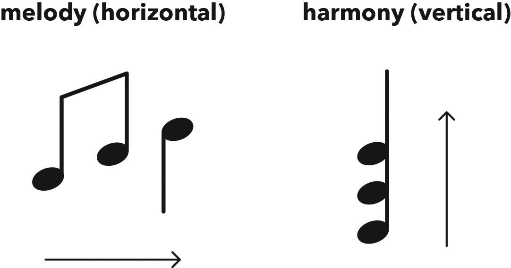
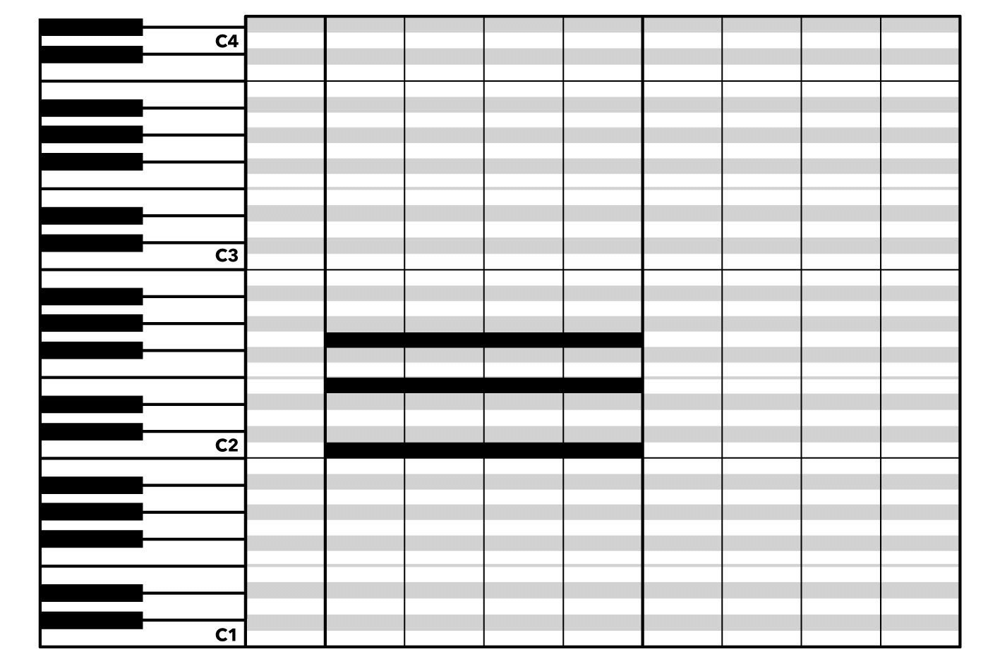
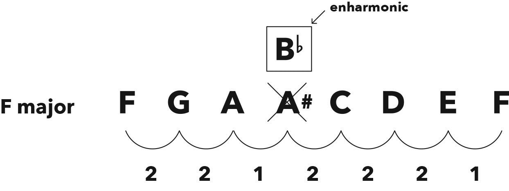

HOW TO USE THIS BOOK 如何使用这本书
Wanna learn Music Theory in 30 minutes? 想在 30 分钟内学习音乐理论吗？
No prob!
没问题！
Each chapter is preceded by a hack (i.e. a cheat sheet) that delivers all the vital info you need to know about that topic.
每个 Chapter 前面都有一个 Hack（即速查表），提供你需要知道的所有关键信息。
Read through all the hacks in 30 minutes or less, ignoring the full chapters, and you’re good to go.
在 30 分钟或更短时间内阅读所有 Hack，忽略完整 Chapter，你就可以开始了。
You’ll miss out on a bunch of bad jokes and deep insights, but you’ll be making good music in less than an hour from now.
你会错过一些冷笑话和深刻的见解，但不到一小时后，你就能开始创作美妙的音乐了。
Oh yeah, one more thing. To keep you skipping merrily along, I’ve added a handy glossary for quick reference.
哦，对了，还有一件事。为了让你愉快地继续，我添加了一个方便的词汇表供快速参考。
All terms in bold have their definitions waiting patiently for you in the back.
所有加粗的术语，其定义都在书后耐心等待你去查阅。
And it goes without saying, which is silly cos now I’m gonna say it, but the debut of a term will always have its explanation with it.
不用说也知道，虽然现在我要说了，但新术语的首次出现总是伴随着解释。
However, later in the book if you come across a term you know was mentioned earlier but now looks Greek, please use the glossary.
然而，如果你在书中稍后遇到之前提到但现在看起来像希腊文的术语，请使用词汇表。
Unless it’s Pythagoras, he looks Greek cos he is Greek.
除非是毕达哥拉斯，他看起来像希腊人因为他确实是希腊人。
Wanna learn more about why and how music works?
想了解更多关于音乐为什么和如何工作的知识吗？
Great! Read this book cover to cover, then use the hacks as references afterwards.
太好了！从头到尾读完这本书，然后将这些 Hack 作为参考使用。
Important tips 重要提示
Music is sound and hearing is believing, so try playing the examples in this book on a piano app, a virtual piano online, or a real piano if you’re old-school.
音乐是声音，听觉即相信，所以试着在钢琴应用、在线虚拟钢琴或老派的实体钢琴上演奏本书中的示例。
Doing this or not doing this won’t affect your understanding of the content, but hearing it all come to life sure is fun.
这样做与否都不会影响你对内容的理解，但听到这一切生动呈现确实很有趣。
Also, you definitely don’t need to read this book in one sitting, though you easily could.
另外，你完全不必一口气读完这本书，尽管你也可以这样做。
Please remember, however, that understanding music theory is an accumulative action, so you’ll probably have questions at the end of each chapter that will be answered in subsequent chapters.
请记住，理解音乐理论是一个累积的过程，所以你可能会在每个 Chapter 结束时有疑问，这些问题将在后续 Chapter 中得到解答。
And, just like in a murder mystery where you have to get to the end before the whole picture becomes clear, our music theory story is still unfolding, too. All shall be revealed soon, so keep reading!
就像在侦探小说中一样，你必须读到最后才能看清全貌，我们的音乐理论故事也在继续发展中。一切很快就会揭晓，所以请继续阅读！
Lastly, you’ll get the best results from reading this book cover to cover, and then repeating that until it’s all soaked in.
最后，你会从从头到尾完整阅读这本书中获得最佳效果，然后反复阅读直到完全理解。
I’ve been told that using the book as a pillow while you’re sleeping also helps this osmosis.
据说在睡觉时把书当作枕头也有助于这种潜移默化。
(Disclaimer: please don’t sue me if you sleep on your e-reader and the screen cracks.)
（免责声明：如果你把电子书阅读器放在枕头上睡觉而屏幕裂了，请不要起诉我。）
P.S. If there's a blank space here ♯ ♭ instead of two musical symbols that kinda look like a hash sign and a lower-case b, then your e-reader's current font doesn't like musical symbols.
P.S. 如果这里有一个空白空间而不是 ♯ 和 ♭ 这两个音乐符号，看起来像井号和一个小写 b，那么可能是你的电子阅读器的当前字体不支持音乐符号。
Boo! Not to worry though, just change fonts and refresh your page until you see these symbols miraculously appear out of thin air.
别担心，只需更改字体并刷新页面，直到这些符号神奇地出现。
However, if they're still not showing up, then please download the PDF version of this book from HackMusicTheory.com
但是，如果它们仍然没有显示出来，请从 HackMusicTheory.com 下载这本书的 PDF 版本。
Pitch & Rhythm 音高与节奏
Hack
There are only ever two ingredients that make up all music: rhythm and pitch.
音乐中只有两个基本元素：节奏和音高。
Rhythm is a pattern in time.
节奏是时间中的一个模式。
Rhythm is independent of tempo, or the speed at which music is played.
节奏与拍速无关，也就是说，与音乐播放的速度无关。
A rhythm can be played fast, slow, or somewhere in between, but it’s all still the same rhythm.
节奏可以快、慢或介于两者之间演奏，但它始终是同一个节奏。
Pitch is the frequency of vibrations, resulting in the highness or lowness of a sound, aka a note.
音高是振动的频率，决定了声音的高低，也称为音符。
It can be expressed in melody (horizontal): a sequence of notes sounded one at a time.
它可以表现为旋律（横向）：一系列依次发出的音符。
Or in harmony (vertical): two or more notes sounded together.
或者表现为和声（纵向）：同时发出的两个或更多音符。
Or in both.
或者两者兼有。

Figure 1.1 Music notation showing the horizontal movement of an unfolding melody, versus the simultaneous vertical stacking of notes to form harmony (e.g. a chord, three or more notes sounded together).
图 1.1 音乐符号展示展开的旋律横向移动，与同时叠加的音符形成和声（例如和弦，三个或更多音符同时发声）的对比。


Figure 1.2 MIDI notation in a digital audio workstation’s piano roll, showing melody (1) versus harmony (2)
图 1.2 数字音频工作站中的钢琴卷帘 MIDI 符号，展示旋律（1）与和声（2）的对比。
Chapter
If music is a painting, then theory is the paint.
如果音乐是一幅画，那么理论就是颜料。
You can’t have one without the other.
两者缺一不可。
Paint combined with imagination creates good artwork, and theory combined with imagination creates good songs.
颜料与想象力结合能创作出优秀的艺术作品，理论与想象力结合则能创作出动听的歌曲。
Unlike in art, however, we musicians only have two ‘colours’ to work with.
然而，与艺术不同，我们音乐家只有两种“颜色”可以使用。
Every song we make, no matter how complicated, is nothing more than various shades and combinations of these two ‘colours’.
我们创作的每首歌，无论多么复杂，都不过是这两种“颜色”的不同色调和组合。
What are they? Drum roll please… pitch and rhythm!
它们是什么？请鼓掌……音高和节奏！
Rhythm 节奏
This is where it probably all began, though musicologists are still arguing over the origins of music and which came first, pitch or rhythm.
这大概是一切的起源，尽管音乐学家仍在争论音乐的起源以及音高和节奏哪个先出现。
While the precise beginnings of our art may be uncertain, what isn’t uncertain is the importance of rhythm.
虽然我们艺术的确切起源可能不确定，但节奏的重要性是毋庸置疑的。
This is the magic ingredient that gets our feet tapping and heads bopping – the element of music that literally moves us.
这是让我们不禁踏脚点头的神奇元素——音乐中真正让我们身体动起来的部分。
Rhythm has been around for thousands of years and we instinctively know what it is, but ask someone to define it and you’d think it was invented yesterday.
节奏已经存在了几千年，我们本能地知道它是什么，但如果你问某人如何定义它，你可能会觉得它是昨天才发明的。
How can something so simple be so difficult to describe?
为什么这么简单的东西却这么难描述呢？
I think it’s because rhythm is built into our DNA: our hearts start playing our inner rhythm before we’re even born and continue to play our personal soundtracks throughout our lives.
我认为这是因为节奏已经嵌入我们的 DNA：我们还未出生时，心脏就开始演奏我们的内在节奏，并在我们的一生中继续演奏我们个人的背景音乐。
Rhythm is to music what our heartbeat is to our body.
节奏对于音乐就像心跳对于身体一样重要。
It’s absolutely vital, but it’s not something we tend to think about.
它绝对必要，但我们往往不会去思考它。
This is a real shame, and often results in rhythm becoming an afterthought in music, whereas it could and should be as integral as the pitches it’s attached to.
这真是一种遗憾，往往导致节奏在音乐中成为一种附带的结果，而实际上它应该和它所附着的音高一样重要。
Finally, here is the simplest way to define the elusive term: rhythm is a pattern in time.
最后，这里是最简单的定义这个难以捉摸的术语的方法：节奏是时间中的模式。
Now go forth and play with time.
现在去玩玩时间吧。
Clap the rhythms you hear in nature or on TV and have fun creating new patterns for old songs or using old rhythmic ideas in a fresh setting.
拍打你在自然界或电视上听到的节奏，并享受为老歌创造新模式或在新鲜环境中使用旧节奏想法的乐趣。
Pitch 音高
Pitch is the element of music that’s determined by the frequency of vibrations, resulting in the highness or lowness of a sound, aka a note.
音高是音乐的元素，由振动的频率决定，产生声音的高低，也称为音符。
Pitch can be divided into melody and harmony.
音高可以分为旋律与和声。
Melody is also known as the tune, or, if you prefer a more standard definition, a sequence of notes sounded one at a time.
旋律也被称为曲调，或者，如果你更喜欢标准的定义，它是一系列依次发出的音符。
Harmony, on the other hand, is when two or more notes are sounded together; this is known as a chord when there are three or more notes sounded together.
另一方面，和声是指同时发出两个或更多音符；当三个或更多音符同时发出时，这被称为和弦。
We visualise melody as horizontal music, because it moves along one note at a time, and harmony as vertical music, because the notes are all on top of each other.
我们将旋律可视化为水平的音乐，因为它一次只移动一个音符，而和声则可视化为垂直的音乐，因为所有的音符都堆叠在一起。
I love harmony, as it’s the one-and-only aspect of music that doesn’t require time to reveal itself.
我喜欢和声，因为它是一首音乐中唯一不需要时间来揭示其全部内容的方面。
Both melody and rhythm, like stories, take seconds and minutes to unfold.
旋律和节奏，就像故事一样，需要几秒钟到几分钟的时间来展开。
Harmony is like visual art: you see it all at once and that ‘wall of sound’ can hit you with such power it’ll take your breath away.
和声就像视觉艺术：你一瞬间就能看到它，那“音墙”的力量会如此强大，让你屏息凝神。
Thankfully, though, as our late friend Bob Marley famously mused: “One good thing about music, when it hits you, you feel no pain.”
幸运的是，正如我们已故的朋友鲍勃·马利曾经沉思的那样：“音乐有一大好处：当它击中你时，你感受不到痛苦。”
So go on, sing a song to enjoy a melody or two, then get a friend to join in to savour some harmony.
所以，唱一首歌来享受一两个旋律，然后找一个朋友一起加入，品味一下和声吧。
Notes & Enharmonics 音符与等音
Hack
This is your alphabet, literally and musically.
这是你的字母表，字面意义和音乐意义上的。
The first seven letters of our English alphabet are used for the white notes on a piano, aka naturals, and for the five black notes we just add sharps (♯) or flats (♭) to those first seven letters.
我们英文字母表的前七个字母（A 到 G）用于钢琴上的白键，即自然音，而五个黑键则通过在前七个字母上添加升号（♯）或降号（♭）来表示。
All music is made from just these twelve notes – it’s that simple!
所有的音乐都由这十二个音符组成，就这么简单！
Sharp (♯) 1 step up (e.g. C♯ is 1 step up from C)
升号（♯）表示升高一个半音（例如，C♯ 是从 C 升高一个半音）
Flat (♭) 1 step down (e.g. D♭ is 1 step down from D)
降号（♭）表示降低一个半音（例如，D♭ 是从 D 降低一个半音）
Enharmonic is a different name for the same note (e.g. C♯ and D♭ are enharmonics).
等音是同一个音的不同名称（例如，C♯ 和 D♭ 是等音）
When you count through all twelve steps (i.e. notes) and end up on the same letter again, that’s known as an octave: same note, but a higher or lower pitched version.
当你依次数完十二个半音（即音符）后又回到了同一个字母，这被称为八度：同一个音符，但音高更高或更低。
Figure 2.1 Notes on a piano keyboard
图 2.1 钢琴键盘上的音符
Chapter
Notes 音符
You already know that in music we have fewer ‘colours’ than in art, and now I have more good news for you.
你已经知道，在音乐中我们比艺术中拥有的“色彩”要少，现在我有更多的好消息告诉你。
We also have fewer ‘letters’ than in the English alphabet.
我们使用的音符也比英文字母表中的字母少。
We only use the first seven letters of that alphabet (A through G) for our musical notes.
我们只使用英文字母表中的前七个字母（A 到 G）作为我们的音乐音符。
These seven letters are the white notes on a piano.
这七个字母是钢琴上的白键。
If you look at a piano keyboard, you’ll see seven white notes that repeat themselves in the same shape, along with five black notes within that shape.
如果你看钢琴键盘，你会看到七个白键以相同的形状重复出现，中间夹杂着五个黑键。
The first white note in this group is C, and if we move up/right or down/left through this twelve-step cycle (seven white notes and five black notes), we arrive at another C – this time a higher or lower pitched one, respectively.
这组中的第一个白键是 C，如果我们沿着这个十二个半音的循环（七个白键和五个黑键）向上/向右或向下/向左移动，我们会到达另一个 C——这次是更高或更低音的 C。
When we play the same note twelve steps above or below, it’s called an octave.
当我们演奏同一个音符，十二个半音以上或以下时，称为八度。
The word ‘octave’ comes from the Greek word oktō, meaning eight, as there are eight letters (notes) in an octave, including the repeated starting note: C D E F G A B C.
“八度”这个词来源于希腊语“oktō”，意思是八，因为一个八度包括八个音符（包括重复的起始音符）：C D E F G A B C。
This is why the octave is sometimes referred to as the 8th.
这就是为什么八度有时被称为第 8 度。
If you’re interested in science, you’ll be fascinated to know that the sound wave of a note an octave higher will vibrate at twice the frequency, and if we play it down an octave the wave will vibrate at half the frequency.
如果你对科学感兴趣，你会发现一个八度音高的音波频率会是原来的两倍，如果我们把它降低一个八度，音波的频率会是原来的一半。
The faster the vibration the higher the pitch, and the slower the vibration the lower the pitch.
音波振动得越快，音调就越高；振动得越慢，音调就越低。
The piano is a great instrument when it comes to visualising theory, as the notes are different colours, which makes everything so easy it’s like an honest form of cheating.
钢琴是可视化理论的好工具，因为琴键有不同的颜色，这使得一切都变得如此简单，就像一种诚实的作弊方式。
There are a few rare exceptions that we’ll get to later, but generally speaking the white notes on a piano are known as naturals, and the black notes are known as sharps or flats.
除了稍后会提到的少数例外情况，通常白键被称为自然音，而黑键被称为升音或降音。
A sharp (♯) note is 1 step up from its original, and a flat (♭) note is 1 step down from its original.
升音（♯）是比原音高一个半音，而降音（♭）是比原音低一个半音。
Enharmonics 等音
Want to impress some friends with your new theory knowledge?
想用你的新理论知识给朋友们留下深刻印象吗？
Next time you’re out enjoying a fine tea and some good conversation, tell them you’d like to discuss enharmonics.
下次当你在享受一杯好茶和一段美好的交谈时，你可以告诉他们你想讨论一下等音。
Or perhaps if you’re being asked to wash the dishes after dinner, shout “Enharmonic!” and run.
或者如果你在晚饭后被要求洗碗，你可以大喊“等音！”然后跑开。
That’ll confuse ’em and should buy you some time.
这样会让他们感到困惑，并且应该能给你争取一些时间。
Although this fancy word will both impress and irritate those bewildered non-theory-knowing people around you, it’s actually such a ridiculously basic concept to understand that you must never reveal its true meaning to the outsiders.
虽然这个洋气的词会让你周围那些不懂理论的人既感到印象深刻又感到困惑，但实际上这是一个极其基础的概念，你绝不能对外人透露它的真正含义。
Now, an enharmonic is a different name for the same note.
现在，等音就是同一个音的不同名称。
You wanted something grander, I know. Sorry to disappoint, but, like everything in music, it’s simple and easy.
我知道你想要一个更宏伟的词，但对不起，就像音乐中的所有东西一样，它其实很简单和容易。
Let me give you an example of an enharmonic.
让我给你举个等音的例子。
You’ve already learnt that if we move one step up from C we land on C♯, and if we move one step down from D we land on D♭, which makes C♯ and D♭ enharmonic equivalents: same note, different name.
你已经学过，从 C 向上移动一个半音会到 C♯，从 D 向下移动一个半音会到 D♭，所以 C♯ 和 D♭ 是等音：同一个音，不同的名称。
Depending on its surroundings, this note will either be a C♯ or a D♭, but it can only ever have one name within each context.
根据其周围的环境，这个音要么是 C♯，要么是 D♭，但在每个具体的语境中，它只能有一个名称
So, yes, sometimes calling a C♯ a D♭ is actually incorrect, even though you’re describing the same note.
所以，是的，有时候把 C♯ 称为 D♭ 其实是不正确的，尽管你在描述同一个音。
More on this intriguing topic in chapter 7.
更多关于这个有趣的话题请参见第 7 章。
Tuning 调音
Hack
Tuning means two things.
调音有两层含义。
First, we tune our instruments and voices in order to play and sing the correct pitches.
首先，我们调整乐器和声音以演奏和演唱正确的音高。
Second, it’s the precise pitch of each note that we tune our instruments and voices to that makes up our tuning system.
其次，我们调至的每个音符的精确音高构成了我们的调音系统。
We use a system known as equal temperament to tune all our musical instruments in the west.
在西方，我们使用十二平均律来为所有乐器调音。
Whether you’re working with a keyboard, guitar, voice, MIDI sequencer, or any other instrument, you’re already experiencing this tuning system.
无论是键盘、吉他、人声、MIDI 编曲器还是其他任何乐器，你都已体验到这个调音系统。
Equal temperament divides the octave into twelve equal steps, known as semitones.
十二平均律将八度分为十二个等份，称为半音。
A semitone is the smallest space between notes in western music, and is a distance of one step.
半音是西方音乐中音符之间的最小间隔，相当于一个音阶的距离。
This mathematical averaging actually pushes our new musical notes slightly out of tune from where Mother Nature placed them and Pythagoras discovered them.
这种数学平均实际上使我们的新音符稍微偏离了自然状态原本的位置。
Just intonation is the original ‘pure’ tuning system that uses whole-number ratios, and works only from one fundamental note at a time.
纯律是最初的“纯”调音系统，使用整数比例，一次只能从一个基音开始。
This was fine for simple medieval music, but just intonation simply doesn’t cut it anymore, as nowadays we demand freedom to musically travel to any note, any chord, any time!
它适用于简单的中世纪音乐，但如今的音乐需求已超越纯律，因为我们需要在任何时间自由地在任何音符和和弦之间转换！
Advantage of equal temperament: We can play any chords, without having to retune.
十二平均律的优点是：我们可以演奏任何和弦，无需重新调音。
Disadvantage of equal temperament: Our music is a tiny bit out of tune.
十二平均律的缺点是：我们的音乐稍微有些跑调。
Chapter
All the music we listen to is out of tune!
我们听的所有音乐都是跑调的！
Seriously. I’m afraid that’s a scientific fact, which makes this subject another conversation starter, or stopper, depending on your company.
这是真的。我怕这是个科学事实，这使得这个话题取决于你的听众，是个谈话的起点或终点。
Don’t worry, this isn’t where music theory becomes conspiracy theory, and please don’t delete all your music in protest, as none of those songs would even exist unless they were all a little out of tune.
别担心，这不是音乐理论变成阴谋论，也不要因抗议而删除所有音乐，因为如果没有一点跑调，那些歌曲根本不会存在。
Let me explain – but first, what is tuning? Tuning means two things.
让我解释一下 – 首先，什么是调音？调音有两层含义。
First, we tune our instruments and voices in order to play and sing the correct pitches.
首先，我们调好乐器和声音以演奏和唱出正确的音高。
Second, it’s the precise pitch of each note that we tune our instruments and voices to that makes up our tuning system.
其次，每个音符的精确音高构成了我们的调音系统。
Our musical notes have been extracted from nature, and, more specifically, from the harmonic series.
我们的音符是从自然界中提取出来的，更具体地说，是从谐波系列中提取出来的。
Just like throwing a pebble into a pond causes ripples, whenever a note is sounded its vibrations also ripple out and set off a series of higher notes, which perform as backing vocalists and sing softly along.
就像投石入池引起涟漪一样，当一个音符被发出时，它的振动也会激起一系列高音，这些高音就像背景歌手一样轻声伴唱。
The harmonic series is the series of higher notes that are set off from the vibrations of a single note.
谐波系列就是从单个音符的振动中激起的一系列高音。
If you’ve ever heard overtone singers, like the Gyuto Monks of Tibet, then you’re already familiar with this phenomenon.
如果你曾经听过泛音歌手，比如西藏的吉托僧侣，那么你已经熟悉这种现象了。
We refer to all these quieter notes that occur in the harmonic series as overtones, and they make up the harmonic series.
我们将谐波系列中所有这些较弱的音符统称为泛音，它们构成了谐波系列。
If you want to get fancy, overtones’ wavelengths can be mathematically explained as whole-number ratios (e.g. 2:1) of the low fundamental note.
如果你想更讲究一点，泛音的波长可以用数学方法解释为低音基音的比例（例如 2:1）。
For example, if you pluck two strings of the same thickness and tension, where the second string is half the length of the first, for every single sound wave vibration of the long string, the short one vibrates twice, producing a note that’s an octave higher.
例如，如果你拉两根同样粗细和张力的琴弦，其中第二根琴弦是第一根琴弦长度的一半，那么对于第一根长琴弦的每一次音波振动，短琴弦就会振动两次，发出高一个八度的音。
This original ‘pure’ tuning system that uses whole-number ratios, and works only from one fundamental note at a time, is called just intonation.
这种最初的“纯”调音系统使用整数比例，只能从一个基本音开始，被称为纯律。
By the way, the amazingness of overtone singers is that they’ve learnt how to turn up their inner ‘backing vocalists,’ so you can hear the low, or fundamental, note they’re singing along with these higher rippled notes (overtones) as well.
顺便说一句，泛音歌手的神奇之处在于他们学会了提高内心的“伴唱歌手”，这样你就能听到他们唱的低音，也就是基础音，与这些高音泛音一起。
Harmony from one voice. Amazing!
一个声音的和声。神奇！
Until the late Renaissance, composers would mostly make simple music that stuck both to one fundamental pitch and to a few notes from its harmonic series, which the old just intonation tuning was perfect for.
直到文艺复兴晚期，作曲家们大多创作简单音乐，只使用一个基本音和其谐波系列中的几个音，而旧的纯律调音正好适合这种需求。
The majority of music was also vocal, another way to sidestep the hassle of constantly retuning instruments to different fundamentals.
大多数音乐也是人声的，这是另一种避免不断调音到不同基本音的麻烦的方法。
However, the tidal wave that 15th century British composer John Dunstaple had started with his complex music eventually swelled into a widespread demand for full creative liberation that just intonation couldn’t provide due to its fundamental limitations.
然而，15 世纪英国作曲家约翰·邓斯泰布尔通过其复杂的音乐所引发的浪潮最终演变成了一种广泛的需求，即完全的创作自由，而纯律由于其根本的局限性无法提供这种自由。
As composers became more interested in musical travel to any and all notes, the need for a tuning system that could provide this freedom became paramount.
随着作曲家们越来越倾向于在任何和所有音符之间进行音乐旅行，他们迫切需要一种能够提供这种自由的音高系统。
To put things into perspective, if they hadn’t solved this problem back then, we’d now be trying to find ways for technology to somehow retune our instruments between every chord change.
为了更好地理解，如果他们当时没有解决这个问题，我们现在可能需要找到方法，让技术在每次和弦变化时重新调音我们的乐器。
And, far worse than that, the vast majority of music that’s been born in the last few centuries would’ve been impossible to create.
而更糟糕的是，在过去几个世纪中诞生的绝大多数音乐本是不可能创作出来的。
For over a millennium, great minds in both Asia and Europe had been working on the idea of dividing the octave into twelve equal steps (equal temperament), which would sever those shackles to a fundamental pitch and permit the migration of music to any note without the need to retune your instrument.
超过一个世纪以来，亚洲和欧洲的伟大思想家们一直在研究将八度分成十二个等步（十二平均律）的想法，这可以打破对基本音高的束缚，使音乐能够转移到任何音符，而无需重新调音。
The turning point finally came in 1722, when the genius J.S. Bach (my hero!) mastered a way of tuning his keyboard so he could play anything, anywhere, anytime.
最终的转折点出现在 1722 年，当时天才约翰·塞巴斯蒂安·巴赫（我的英雄!）掌握了一种调音键盘的方法，使他可以在任何地方、任何时间演奏任何音乐。
He celebrated this historic achievement by writing a collection of compositions that did exactly that, titled The Well-Tempered Clavier.
他通过创作一系列这样的作品来庆祝这一历史性的成就，这些作品被命名为《平均律钢琴曲集》。
Although there were countless people who all worked tirelessly over the years to make this dream a reality, it was Bach’s music that took it to the world.
尽管多年来有无数人辛勤工作，使这个梦想成为现实，但还是巴赫的音乐将这一成就带到了全世界。
By the 1830s, most instruments were being manufactured using the new tuning system, and this invention of dividing the octave into twelve equal steps, known as semitones, has gone on to revolutionise music by allowing everyone from Beethoven to the Beatles (and yes, even Bieber) to play music using all of the notes without retuning.
到 1830 年代，大多数乐器的制造已经采用了新的调音系统，这项将八度音分为十二个等分音（半音）的发明，已经彻底改变了音乐，使得从贝多芬到披头士（当然，甚至包括贾斯汀·比伯）都能使用所有音符演奏音乐，而无需重新调音。
The downside to this averaging of our pitches is that some of them are now slightly out of tune to what nature intended, but I’m sure you’ll agree that the infinite upsides are more than worth it.
这种平均音高的缺点是，其中一些音现在稍微偏离了自然的预期，但我相信你会同意，无限的好处远远超过了这一点。
(The octave can, of course, be divided into any number of steps, like in the Arabic musical system where they halve western semitones into quartertones, resulting in twenty-four notes to an octave.
当然，八度音也可以分成任何数量的音阶，比如阿拉伯音乐系统中将西方半音再分为四分音，一个八度有二十四个音符。
If you haven’t heard music like this, do yourself a favour and listen to some, as it’s utterly mesmerizing and magical.)
如果你还没有听过这样的音乐，不妨听一听，因为它真是令人着迷和神奇。
Major Scale 大调
Hack
A scale is a family of notes that work together.
音阶是一组能够和谐共存的音符。
The original family is the major scale, often referred to as the ‘happy scale’ due to its cheerful sound.
最基础的音阶是大调音阶，通常被称为“快乐音阶”，因为它的声音听起来很愉快。
All major scales are exactly the same scale, made up from exactly the same formula but starting on a different note.
所有大调音阶都遵循相同的模式，只是从不同的音符开始。
This formula is derived from playing all the white notes on a piano, beginning with C.
这个模式是从钢琴上弹奏所有的白键得出的，从 C 音开始。
Therefore, the major scale formula (counted in steps, aka semitones) is: 2 2 1 2 2 2 1
因此，大调音阶的公式（以步数计算，即半音）是：2 2 1 2 2 2 1

Figure 4.1 Major scale formula derived from white notes on a piano, starting on C
图 4.1 大调音阶公式，从钢琴白键的 C 音开始得出
Figure 4.2 To find the D major scale, start the major scale formula on D
图 4.2 要找到 D 大调音阶，以 D 为起始音应用大调音阶公式
When writing out music, each note is assigned the number of its degree in the scale, from 1 to 7.
在音乐记谱中，每个音符都会被赋予其在音阶中的度数，从 1 到 7。
We then use 8 to complete the scale and represent a version of the root an octave higher.
然后我们用 8 来完成音阶，表示比根音高一个八度的音符。
This is called spelling, and is the numerical way of writing music (e.g. major scale = 1 2 3 4 5 6 7 8).
这被称为拼谱法，是用数字记谱的方法（例如，大调音阶=1 2 3 4 5 6 7 8）。
VOCAB EXTRAS 词汇补充
Root / root note / tonic: first note of a scale (e.g. D is the root in D major)
根音 / 根音符 / 主音：音阶的第一个音符（例如 D 大调中的 D 是根音）
Interval: space between any two notes, measured in semitones (e.g. twelve semitones is the interval of an octave)
音程：两个音符之间的距离，以半音为单位（例如，十二个半音是一个八度音程）
Semitone: smallest interval in western music and is an interval of one step (e.g. C to C♯)
半音：西方音乐中最小的音程，是一个音阶的音程（例如 C 到 C♯）
Tone / whole tone: interval of two semitones (e.g. C to D)
全音：两个半音的音程（例如 C 到 D）
Chapter
As much as we love playing with notes, that’s how much Pythagoras loved playing with numbers back in the good ol’ BCE days.
尽管我们喜欢玩音符，但在公元前的美好时光里，毕达哥拉斯同样热衷于玩弄数字。
The Greek overachiever discovered that repeating a 3:2 frequency ratio (the next simplest after that ultra-pure 2:1 octave ratio) produced a pleasant sounding set of notes that he could make melodies from.
这位希腊成就非凡的人发现，重复 3:2 的频率比（在超纯的 2:1 八度比之后的下一个最简单的比率）能产生一组悦耳的音符，他可以用这些音符来创作旋律。
This is further proof that music at its core is simple.
这进一步证明了音乐在本质上是简单的。
The special notes are: C D E F G A B C.
这些特殊的音符是：C D E F G A B C。
This would later become known as the major scale, or ‘happy scale’ due to its cheerful sound.
这后来被称为大调音阶，或因其欢快的声音而被称为“快乐音阶”。
Those notes probably look familiar too, as they’re all the piano’s white notes.
这些音符可能看起来也很熟悉，因为它们都是钢琴上的白键。
Thanks to equal temperament tuning, we no longer need to calculate our scales using ratios.
由于十二平均律调音法，我们不再需要使用比率来计算我们的音阶。
We simply use steps, aka semitones.
我们只需要使用步骤，即半音。
As the piano keyboard is designed around C major, let’s start there.
由于钢琴键盘是以 C 大调为基础设计的，我们就从这里开始。
By analysing the semitones between the white notes, we’ll discover the underlying formula for all major scales.
通过分析白键之间的半音，我们将发现所有大调音阶的基本公式。
There are two steps (semitones) from C to D, as there’s a black note in between, and there is one step (semitone) from E to F, and so on.
从 C 到 D 有两个半音，因为中间有一个黑键，从 E 到 F 有一个半音，依此类推。
Here is the complete major scale formula: 2 2 1 2 2 2 1
这是完整的大调音阶公式：2 2 1 2 2 2 1
Now we can take this semitone sequence and start anywhere we want, like on D, for a D major scale:
现在我们可以用这个半音序列，从我们想要的任何地方开始，比如从 D 开始，得到 D 大调音阶：
Finally, here’s some more terminology to further impress your friends with.
最后，这里还有一些术语，可以让你进一步给朋友留下深刻印象。
The first note of a scale is called its root or root note, or sometimes, tonic.
音阶的第一个音符称为根音或根音符，有时也被称为主音。
An interval is the space between any two notes, measured in semitones (e.g. twelve semitones is the interval of an octave).
音程是指任意两个音符之间的距离，以半音为单位测量（例如，十二个半音是一个八度音程）。
The interval of one step is a semitone, and the interval of two semitones can be called a tone, or whole tone.
一步的音程是一个半音，两步的音程可以称为一个全音或大音程。
The spelling of a scale or chord is the numerical way of writing it.
音阶或和弦的拼写是用数字来表示它的方法。
Each note is assigned the number of its degree in the scale, from 1 to 7.
每个音符被分配其在音阶中的度数，从 1 到 7。
We then use 8 to complete the scale and represent a version of the root an octave higher.
然后我们使用 8 来完成音阶，并表示根音的一个八度更高的版本。
The 1 and 8 are, of course, the same note, so technically a major scale only has seven different notes.
当然，1 和 8 是相同的音符，所以技术上讲，大调音阶只有七个不同的音符。
Using numbers to represent the notes of a scale allows us to detach melodies and chords from specific pitches, revealing their underlying contours and shapes.
使用数字来表示音阶中的音符，可以使旋律和和弦脱离特定的音高，揭示它们的基本轮廓和形状。
This is one of the most vital concepts in understanding and composing music, as it gives you insight into your own preferences for certain musical patterns.
这是理解音乐与作曲的关键概念之一，因为它能让你洞察自己对某些音乐模式的偏好。
And as a bonus, spelling music also enables you to move songs up or down in pitch, to better suit a singer’s range.
另外，音符的记谱法还可以让你将歌曲的音高上下调整，以更好地适应歌手的音域。
For example, if your melody started with the 1 followed by the 3, in C major, but you found that it was too low for your voice, you could move it up to D major and sing its 1 and 3 instead.
例如，如果你的旋律以 1 开始，接着是 3，在 C 大调中，但你发现太低了，那你可以把它移到 D 大调，并唱 D 大调的 1 和 3。
The melodic contour and resulting emotion will be identical.
旋律线条和最终的情感将保持不变。
However, if you referred to the notes in our C major melody as C and E (instead of 1 and 3), then you can’t move them directly into D major.
然而，如果你将 C 大调旋律中的音符称为 C 和 E（而不是 1 和 3），那么你就不能直接将它们移到 D 大调。
You’d first have to work out what degrees C and E are in C major, then take those numbers over to D major and work out the new notes.
你得先搞清楚 C 和 E 在 C 大调中的音级，接着用这些数字去找出 D 大调中的相应音符。
Numbers simplify music to the point of having only a single major scale.
数字将音乐简化到只有一个大调音阶。
Rather than learning twelve different major scales – one for each note – we learn only one and apply its formula to whatever note we want to start from.
我们不需要学习十二种不同的大调音阶（每个音一个），而是只学一种，并将其公式应用于我们想要开始的任意音符。
So the next time you’re walking down the street and someone asks you to spell a major scale, reply with 1 2 3 4 5 6 7 8 – and then run away as fast as you can, cos what kind of weirdo goes up to strangers and asks them to spell things?!
所以，下次如果你走在街上，有人让你拼出大调音阶，你就回答 1 2 3 4 5 6 7 8，然后赶紧跑，因为只有怪人才会找陌生人让他们拼音阶吧？！
Minor Scale & Relatives 小调与关系调
Hack
When you start on the 6th note of a major scale (the ‘happy scale’), you get a minor scale, aka natural minor scale (nicknamed the ‘sad scale’).
当你从大调音阶的第六个音（“快乐音阶”）开始时，你会得到一个小调音阶，即自然小调音阶（昵称“悲伤音阶”）。
By using one of the other notes within a scale as your root, you create different emotions without changing any notes.
通过使用音阶中的其他音符作为根音，你可以在不改变任何音符的情况下创造出不同的情感。
For example, if you emphasise the 6th note in the C major scale as your root, you get the A minor scale.
例如，如果你强调 C 大调音阶的第六个音符作为根音，你会得到 A 小调音阶。
And vice versa: if you’re in A minor and you want the major scale hiding within, emphasise the 3rd note (i.e. C) as your root.
反之亦然：如果你在 A 小调中并想找到隐藏在其中的大调音阶，你可以强调第三个音符（即 C）作为根音。
These two scales are relatives, or relative scales, as they are scales that have the same notes, but a different root (i.e. they start in a different place).
这两个音阶是关系调或相对音阶，因为它们包含相同的音符，但根音不同（即它们从不同的地方开始）。
The relative major is the scale you get when you start on the 3rd note of a minor scale.
关系大调是从小调音阶的第三个音开始的音阶。
The relative minor is the scale you get when you start on the 6th note of a major scale.
关系小调是从大调音阶的第六个音开始的音阶。
The formula for the natural minor scale is derived from playing all the white notes on a piano, starting on A.
自然小调音阶的公式是从 A 开始弹奏钢琴上的所有白键得出的。
Counted in semitones, it is: 2 1 2 2 1 2 2
以半音为单位，它是：2 1 2 2 1 2 2

Figure 5.1 Minor scale, aka natural minor scale, formula derived from white notes, starting on A
图 5.1 自然小调音阶公式，从 A 开始的白键得出
VOCAB EXTRAS 词汇补充
Key: the scale in use (e.g. a melody in the A minor scale is in the key of A minor)
调性：所使用的音阶（例如，使用 A 小调音阶的旋律属于 A 小调）
Key signature: the sharps or flats in a scale (e.g. F♯ and C♯ in D major – see Figure 4.2)
调号：音阶中的升号或降号（例如 D 大调中的 F♯ 和 C♯——见图 4.2）
Chapter
Music is life’s sonic mirror, and life sure ain’t rainbows and narwhals all the time (unless you’re incredibly unlucky, as it’s the difficult days that provide us with the best opportunities to learn and grow).
音乐是生活的声音镜像，而生活当然并非时时刻刻都是彩虹和独角鲸（除非你极其倒霉，因为正是那些艰难的日子为我们提供了最佳的学习与成长的机会）。
When things are good, we have the major scale to express our happiness, but when the going gets tough, we need something stronger.
当一切顺利时，我们可以用大调音阶来表达我们的快乐，但当情况变得艰难时，我们需要更强大的东西。
No, not whiskey.
不，不是威士忌。
We need a scale that can empathise with us in our darker moments, allowing for reflection and then progression.
我们需要一种能够在我们最黑暗的时刻与我们共鸣的音阶，允许我们反思然后进步。
Please meet the minor scale, also known as the natural minor scale.
请认识一下小调音阶，也就是自然小调音阶。
Following the birth of the major scale, an unexpected twin popped out: the minor.
在大调音阶诞生后，意外诞生了一对双胞胎：小调音阶。
From making music using the major scale, it was discovered that the cheerful emotion could be completely flipped by merely accentuating the 6th note of that scale as the root.
通过使用大调音阶创作音乐，人们发现，只需将那个音阶的第六个音作为根音来强调，就能完全翻转那种愉快的情感。
On a piano, if you play the C major scale with your right hand while your left hand plays a low C note, you get that ‘happy’ major vibe.
在钢琴上，如果你用右手弹奏 C 大调音阶，同时左手弹奏一个低音 C，你会得到那种“快乐”的大调氛围。
However, if you play the same C major scale with your right hand, but this time your left hand plays a low A (the 6th note in C major), you get an entirely different atmosphere, a sad and sombre one.
然而，如果你用右手弹奏相同的 C 大调音阶，但这次左手弹奏一个低音 A（C 大调中的第六个音），你会得到一种完全不同的氛围，一种悲伤而阴郁的氛围。
You’ve just turned C major into A minor, without changing any notes.
你只是通过强调不同的音符，将 C 大调变成了 A 小调，而没有改变任何音符。
Take that, David Copperfield! This trick also works the other way around.
这可比大卫·科波菲尔的魔术厉害多了！而且这个技巧还可以反过来使用。
If you’re playing in A minor and want to turn it major, simply emphasise the 3rd note (i.e. C) as the root and suddenly you’re in C major, without changing a note.
如果你在 A 小调中演奏并想将其转换为大调，只需强调第三个音符（即 C，作为根音），你就突然处于 C 大调，而无需改变任何音符。
Like identical twins, these two scales share the same DNA but have totally different personalities, and that’s why they’re called relatives, or relative scales.
如同同卵双胞胎一样，这两个音阶拥有相同的基因，但个性完全不同，因此它们被称为相对音阶。
These scales have exactly the same notes, but a different root (i.e. they start in a different place).
这些音阶拥有完全相同的音符，但根音不同（即它们从不同的地方开始）。
As time went by, the minor scale underwent a couple of tweaks (we’ll get to ’em later), which resulted in the original version becoming known as the natural minor scale in order to differentiate it from its variations.
随着时间的推移，小调音阶经历了一些调整（我们稍后会谈到这些调整），这使得原始版本被称为自然小调，以区别于它的变体。
To conclude, when you count the semitones between each white note on a piano, starting from A, you get the natural minor scale formula: 2 1 2 2 1 2 2
总结一下，当你从 A 音开始数钢琴上的半音时，你会得到自然小调音阶的公式：2 1 2 2 1 2 2
Now it’s time to add some more terms to your music vocabulary, and, as always, I encourage you to insert them into your everyday conversations to annoy people.
现在是时候给你的音乐词汇表中添加一些新词了，和往常一样，我鼓励你在日常对话中使用它们来给别人留下深刻印象。
First up we have key, which refers to the scale in use.
首先我们有“调”，指的是正在使用的音阶。
If you’re composing a song and you make the intro using A minor, you’ll say that intro is in the key of A minor.
如果你在创作一首歌，并用 A 小调音阶做引子，那么你会说这首歌的引子是 A 小调的。
Next we have key signature, which is the sharps or flats in a scale.
接下来是“调号”，指的是音阶中的升号或降号。
So the key signature of D major (discussed in the previous chapter) is F♯ and C♯.
所以 D 大调的调号（在上一章中讨论过）是 F♯ 和 C♯。
This will be helpful later…
这以后会很有用……
Last, can we please take a moment to marvel at the life lesson that music is teaching us through relative keys?
最后，我们是否可以花一点时间来赞叹音乐通过相对音阶告诉我们的生活教训？
You can interpret every situation from two contrasting views: positive or negative.
你可以从两个相反的视角来解读每一种情况：积极或消极。
This always reminds me of my childhood, growing up ten minutes down the road from the Khayelitsha township in Cape Town.
这总是让我想起我的童年，我住在开普敦郊外距离凯西利沙镇十分钟车程的地方。
I’d see children there who couldn’t even afford shoes, joyfully running around barefoot, truly happy and thankful to be alive.
我看到那里的孩子们连鞋都买不起，却光着脚快乐地跑来跑去，真的很幸福和感谢能够活着。
They’re living a minor melody, but their choice to highlight the 3rd note turns everything to major.
他们生活在小调旋律中，但他们选择强调第三个音，将一切转变成大调。
Then on the opposite extreme, many people in wealthy countries are living major melodies, but corporations work relentlessly to brainwash the masses via a bombardment of advertisements into focusing on the 6th note and feeling the relative minor.
在另一个极端，许多富裕国家的人们在过着大调的生活，但大公司却通过广告轰炸不断地洗脑大众，让他们关注第六个音符并感受相对小调的情绪。
And, of course, the only way you can ‘fix’ your life is to buy their products.
当然，唯一能够“提升”你生活的方式就是购买他们的产品。
We can all learn a lot from music, and from the inspirational children of Khayelitsha.
我们都能从音乐以及凯西利沙那些充满启发的孩子们身上学到很多东西。
When life gives you a major scale, enjoy it with gratitude while sharing it, and when life gives you a minor scale, start on the 3rd!
当生活给你一个大调音阶时，怀着感恩的心去享受并分享它；当生活给你一个小调音阶时，从第三个音开始吧！
Finding Relatives 寻找关系调
Hack
To find the relative minor, count three semitones down in pitch from the major scale root.
要找到相关小调，从大调音阶的根音开始向下数三个半音。
To find the relative major, count three semitones up in pitch from the minor scale root.
要找到关系大调，从小调音阶的根音向上数三个半音。
Remember, there is always a note (i.e. letter) skipped between the roots of relative scales, aka relative keys.
请记住，关系音阶（即关系调）的根音之间总是跳过一个音符（即一个字母）。

Figure 6.1 Shortcut to finding relative keys
图 6.1 关系调的快捷查找方法
| Majors to relative minors 大调到关系小调 (three semitones down) （下降三个半音） | Minors to relative majors 小调到关系大调 (three semitones up) （上升三个半音） |
|---|---|
| B major = G♯ minor | D minor = F major |
| E♭ major = C minor | B♭ minor = D♭ major |
Figure 6.2 Examples of relative keys
图 6.2 关系调的示例
Chapter
Have you seen the film Finding Nemo?
你看过《海底总动员》这部电影吗？
Yeah, finding relatives isn’t anything like that, but the fish are so cute, aren’t they?
是的，寻找关系调可不像那电影，但鱼儿们真的很可爱，不是吗？
Okay, back to work.
好了，回到正题。
If you’re in a major key and want to find its relative minor, play the same scale but start on the 6th note.
如果你在大调里，想找到它的关系小调，就用同样的音阶，但是从第六个音开始。
And, if you’re in a minor key and want to find its relative major, play the same scale but start on the 3rd note.
如果你在小调里并且想找到它的关系大调，就用同样的音阶，但从第三个音符开始。
This method is great, but there’s a much quicker way to find relatives, which will save you from having to first figure out the scale and only then count up.
这种方法很好，但有一个更快的方法可以找到关系调，这样你就不用先找出音阶再数数了。
You know from the previous chapter that C major and A minor are relatives.
你知道在上一章中提到，C 大调和 A 小调是关系调。
The roots C and A are three semitones apart, and we can use this as a shortcut to find any relative.
C 和 A 的根音相差三个半音，我们可以用这个来快捷找到任何关系调。
To find the relative minor, count three semitones down in pitch (e.g. C down to A).
要找到关系小调，从音高下降三个半音（例如 C 到 A）。
To find the relative major, count three semitones up in pitch (e.g. A up to C).
要找到关系大调，从音高上升三个半音（例如 A 到 C）。
The way I remember which direction to move is by thinking of the literal meanings of major as important and minor as less important.
我记住该往哪个方向数的方法是，根据“major”（大调/重要的）和“minor”（小调/不那么重要的）这两个词的字面意思。
By these definitions, majors are above minors, so you would count down from a major to a minor, and up from a minor to a major.
根据这些定义，大调高于小调，所以你会从大调向下降到小调，从小调向上升到大调。
Let’s practice this shortcut with an example.
让我们用一个例子来练习这个技巧。
If we’re in the key of E major, what is the relative minor?
如果我们处于 E 大调，那么它的关系小调是什么？
Take a minute to work it out, by counting three semitones down from E.
花一分钟时间算一算，从 E 开始数三个半音。
Did you get D♭ minor?
你得到的是 D♭ 小调吗？
If you did, congrats, you landed on the right note.
如果是，恭喜你，找到了正确的音符。
But, as we can see from the original C major and A minor relatives, there is a note (i.e. letter) skipped – B – between their roots.
但是，从最初的 C 大调和 A 小调的关系来看，它们的根音之间跳过了一个音符（即字母 B）。
Therefore, D♭ minor can’t be the relative of E major, as their roots are adjacent letters.
因此，D♭ 小调不能是 E 大调的关系调，因为它们的根音是相邻的字母。
Having said that, though, we’re certain about the D♭ as it’s definitely three semitones down from E.
不过，可以肯定的是，D♭ 确实是从 E 开始往下降的三个半音。
This means we’ve got the correct note but the incorrect name for it.
这意味着我们得到了正确的音符，但名字不对。
There’s an easy solution to this problem that often arises.
这个常见问题有一个简单的解决方法。
Whenever we know for sure that we’re on the right note, but its name is wrong, we call on our enharmonic friends.
每当我们确定自己得到了正确的音符，但名称不对时，我们可以求助于等音。
What’s the enharmonic equivalent (other name) for D♭? D♭ 的等音（另一名称）是什么？
Yep, C♯.
对，是 C♯。
That means C♯ minor is the relative of E major.
这意味着 C♯ 小调是 E 大调的关系调。
We haven’t even worked out the E major scale yet, but we already know its relative.
我们甚至还没计算出 E 大调音阶，就已经知道了它的关系调。
That’s a good shortcut! Here are a few more examples to test out your new trick:
这是一个很好的捷径！这里有一些例子让你测试新技巧：
| Majors to relative minors 大调到关系小调 (three semitones down) （下降三个半音） | Minors to relative majors 小调到关系大调 (three semitones up) （上升三个半音） |
|---|---|
| B major = G♯ minor | D minor = F major |
| E♭ major = C minor | B♭ minor = D♭ major |
Remember, in order to properly switch into the relative, you need to emphasise the new root, otherwise it’ll sound like you’re still in the same key.
请记住，为了正确地转换到关系调，你需要强调新的根音，否则听起来会像还在同一个调性中。
If I’m playing in D minor and want to change to F major in order to lighten the emotion of my song, it won’t happen unless I actively make F sound more important than D.
如果我正在 D 小调中演奏，并且想切换到 F 大调以使歌曲的情感更轻快，除非我主动让 F 音变得比 D 音更重要，否则是不可能实现的。
There are numerous ways we can make a note sound prominent, like starting or finishing the melody on it, or playing it longer or louder than the other notes.
有很多方法可以让一个音显得出众，比如用它开始或结束旋律，或者演奏得比其他音符更长或更响。
In this D minor song, the instant our ears are drawn to F as the new home, we’ve switched into the relative major and our mood will lift.
在这首 D 小调的歌曲中，当我们的耳朵被 F 吸引为新的主音时，我们就切换到了关系大调中，我们的情绪也会得到提升。
Easy peasy.
简单轻松。
Why Flats Exist 为什么会出现降号
Hack
Every major and minor scale must contain the first seven letters of the alphabet, otherwise things get confusing.
每个大调和小调都必须包含字母表的前七个字母，否则会变得很混乱。
If you’re working out a scale and you get to an A, and your formula says the next note is one semitone up (A♯), it must be referred to by its enharmonic (B♭), otherwise the scale will have two As and no B.
如果你在构建一个音阶，到了 A，而你的公式说下一个音是半音上升（A♯），此时必须用等音（B♭）来表示，否则音阶中会有两个 A 而没有 B。
This is the sole reason for the existence of flats.
这就是降号存在的唯一原因。

Figure 7.1 In F major, one semitone up from A must be referred to as B♭
图 7.1 在 F 大调中，从 A 向上一个半音应称作 B♭

Figure 7.2 In G minor, we rename A♯ to B♭ and D♯ to E♭, in order for the scale to contain all seven letters
图 7.2 在 G 小调中，我们将 A♯ 重命名为 B♭，将 D♯ 重命名为 E♭，以便音阶包含所有七个音符。
Remember, key signatures consist of either sharps or flats, not both.
请记住，调号要么由升号组成，要么由降号组成，不会两者都有。
Chaper
A♯ and B♭ are two different names for the same note, so why don’t we just call the note A♯ all the time?
A♯ 和 B♭ 是同一个音符的不同名称，那为什么我们不一直叫这个音符 A♯ 呢？
This is a great question, and provides me with the perfect opportunity to bust out another metaphor.
这是一个很好的问题，也给了我一个使用另一个比喻的绝佳机会。
When I was teaching at the college in London, we hired a new lecturer named Will, and all was well in the music department.
当我在伦敦的学院教书时，我们聘请了一位名叫威尔的新讲师，一切都很好。
Then we went on to hire another new lecturer, also named Will, and order descended into chaos within our music team.
然后我们又聘请了一位新讲师，也叫威尔，音乐团队随即陷入混乱。
Will the Second decided to do the right thing and kindly volunteered himself for a name change to Bill.
第二位威尔决定做正确的事情，友好地自愿改名为比尔。
This was the only way we could avoid confusion, and it’s exactly the same in music.
这是我们避免混淆的唯一方法。在音乐中也是如此。
For example, when we work out the F major scale, we notice that the 3rd note is A and the 4th note is one semitone up from that (A♯).
例如，当我们计算 F 大调音阶时，我们注意到第 3 个音符是 A，第 4 个音符是半音上升的 A♯。
We now have two As in our team, which is thoroughly ambiguous, so we need to give the second A another name.
现在我们的音阶中有两个 A，导致非常模糊，所以我们需要给第二个 A 起另一个名字。
Once again, enharmonics save the day. By using the other name for A♯ (i.e. B♭), everything is crystal clear when we’re writing, reading, discussing, and playing music in F major.
再次使用等音记号，通过使用 A♯ 的另一个名字（即 B♭），当我们在 F 大调中写、读、讨论和演奏音乐时，一切都清楚了。
This is the sole reason for the existence of flats, and understanding this concept allows us to fully appreciate that having two names for each note doesn’t make things more complicated: it actually prevents confusion and makes everything much simpler.
这就是降号存在的唯一原因。理解这个概念让我们能够充分理解，给每个音符两个名字不会使事情变得更复杂，相反，它实际上防止了混乱，使一切变得更加简单。
I really dig how this also ensures that each note is treated equally, and while they’re all connected and working together as a team, they’re still individuals with individual names.
我非常欣赏这种处理方式不仅确保了每个音符都被平等对待，虽然它们都是相互连接并一起合作的团队成员，但它们仍是有自己名字的个体。
How beautifully reflective of life and of a society living in harmony.
这美丽地反映了生活和一个和谐的社会。
This is why, depending on the context, it can be incorrect to refer to a note by its other name (as we mentioned in chapter 2), like in F major where there’s no A♯, only B♭.
这就是为什么根据上下文，用另一个名字称呼一个音符可能是错误的（如我们在第二章提到的），例如在 F 大调中没有 A♯，只有 B♭。
Let’s do another one for practice, and let’s try a minor this time.
让我们再练习一次，这次我们试试一个小调音阶。
How about G minor? Take a few minutes to figure it out yourself, and, when you’re done, have a look at my version and see if you got all the names correct for your new crew.
我们试试 G 小调怎么样？花几分钟时间自己尝试一下，完成后看看我的版本，看看你是否正确地命名了所有音符。
In G minor, we end up with two friends who need renaming.
在 G 小调中，我们最终得到两个需要重新命名的音符。
First, the A♯ is renamed B♭; second, the D♯ is renamed E♭.
首先，A♯ 被重命名为 B♭；其次，D♯ 被重命名为 E♭。
The key signature of G minor is therefore B♭ and E♭.
因此，G 小调的调号是 B♭ 和 E♭。
It’s worth noting that in both major and natural minor scales, you’ll only ever have sharps or flats, never both.
值得注意的是，在大调和自然小调音阶中，你只会遇到升号或降号，而不会同时都有。
In other words, your key signatures consist of either sharps or flats.
换句话说，你的调号要么是升号，要么是降号。
This will help keep you on the right path: if you’re working out a major or natural minor scale and end up with both sharps and flats, then something must’ve gone wrong somewhere.
这有助于保持正确的方向：如果你在计算大调或自然小调音阶时，出现了升号和降号，那肯定是某个地方出错了。
Double-check the formula and count those intervals again.
请再次检查公式并重新计算这些音程。
Now that everyone’s here and happy with their names and individuality, we can continue respectfully, sans confusion.
现在大家都在对自己的名字和个体感到满意，我们就可以继续以尊重的态度进行，不会产生混淆。
Difference Between Major & Minor Scales 大调与小调的区别
Hack
‘Happy’ major scales and ‘sad’ minor scales share four notes (1 2 4 5), while the other three notes (3 6 7) are different.
“快乐”的大调音阶和“悲伤”的小调音阶共有四个相同的音符（1 2 4 5），而另外三个音符（3 6 7）不同。
The reason for these scales’ opposite emotions must therefore lie within these three different notes.
因此，这些音阶情感相反的原因就在于这三个不同的音符。
The 3rd, 6th and 7th notes are one semitone lower in natural minor scales than they are in major scales.
在自然小调中，第 3、第 6 和第 7 个音符比大调中的对应音符低一个半音。
To represent this one semitone down, we add a flat (♭) to their spelling.
为了表示这个低一个半音的变化，我们在它们的拼写中加上一个降号（♭）。
By their spelling, these flats tell us that their associated notes are one semitone down from where they are in a major scale.
通过拼写，这些降号指出这些关联的音符比大调音阶中的位置低一个半音。
They don’t tell us that the notes (i.e. letters) themselves are flats, like in A minor (below) where the ♭3 is C, a natural note.
它们并不意味着这些音符（即字母）本身是降号，比如在 A 小调中（如下所示），降三音是 C，这是一个自然音。

Figure 8.1 Comparison of A major scale to A natural minor scale
图 8.1 A 大调音阶与 A 自然小调音阶的比较
| Major scale 大调 | 1 | 2 | 3 | 4 | 5 | 6 | 7 | 8 |
| Natural minor scale 自然小调 | 1 | 2 | ♭3 | 4 | 5 | ♭6 | ♭7 | 8 |
Figure 8.2 Comparison of major and natural minor scale spellings
图 8.2 大调与自然小调的音符拼写比较
All major scales have the same underlying semitone formula and therefore the same spelling, and all natural minor scales have the same formula and spelling.
所有大调都有相同的半音公式，因此音符拼写相同；所有自然小调也有相同的公式和拼写。
Remember, we write spellings and notes the way we say them.
请记住，我们按发音写音符和拼写。
For example, flat three is written as ♭3 (sign before number), and F sharp is written as F♯ (sign after letter).
例如，降三音写作 ♭3（符号在数字前），F 升写作 F♯（符号在字母后）。
Chapter
I know you’ve already read the title of this chapter and answered: Major scales sound happy and minor scales sound sad, done deal, next chapter please.
我知道你已经读了这一章的标题，并回答：大调听起来快乐，小调听起来悲伤，搞定了，请看下一章吧。
You are correct, congrats!
你答对了，恭喜你！
But before we move on, I’m going to briefly whisk you away on a nostalgic detour.
但在我们继续之前，我会带你稍微走一段怀旧的弯路。
Ready?
准备好了吗？
Remember when we were kids, what our favourite follow-up question to every question we ever asked was?
还记得我们小时候每次问问题后最喜欢的后续问题是什么吗？
Of course, it was “why?” This one syllable would simultaneously empower our learning about the world while providing endless amusement as we watched adults squirm through ‘explanations’ of things they didn’t understand themselves.
当然，是“为什么？”这个单音节词既能让我们了解世界，同时也能在看到大人们挣扎着解释自己都不理解的事物时，给我们带来无尽乐趣。
Why is the sky blue?
天空为什么是蓝色的？
Why did Milli Vanilli win a Grammy for lip-syncing?
米利·凡利为什么因为假唱赢得了格莱美奖？
Why does the paradox encountered in quantum entanglement work?
量子纠缠中遇到的悖论是怎么运作的？
You know, just the usual kid stuff.
你懂的，这就是孩子们关心的通常问题。
It’s heartbreaking how our wonder dissolves into indifference as we grow older.
令人难过的是，随着我们长大，我们对世界的好奇心逐渐消失，变得冷漠。
I’ll never forget the time many years ago when I stopped my car at a pedestrian crossing to let a father and son cross the road.
我永远不会忘记多年前的一次，我在一个人行横道停车让一对父子过马路。
As they walked in front of me I was struck by the shockingly vast divide between the adult and the child.
当他们在我面前走过时，我震惊于大人与孩子之间的巨大差距。
The dad’s gaze was firmly fixed on the ground with the weight of the world on his shoulders, while the child skipped along fuelled by inquisitiveness as he peered up at the infinite possibilities of the world.
父亲的目光牢牢地盯着地面，肩上似乎承载着全世界的重担，而孩子则带着强烈的好奇心蹦跳着，仰望着世界的无限可能。
Please, let’s regularly remind ourselves to reconnect with our inquisitive younger selves, as that’s the most effective and fun way to learn and live.
请我们时常提醒自己，与我们充满好奇心的年轻自我重新连接，因为这是一种最有效也最有趣的学习和生活方式。
I always make a deal with my students in their very first theory lesson: if they ever ask why something is the way it is or why it’s relevant, and I can’t explain, then they don’t have to learn it.
我总是在学生的第一堂理论课上与他们达成一个协议：如果他们问为什么某样东西是那样，或者为什么它重要，而我不能解释清楚，那么他们就不用学习它。
This keeps us all on our toes.
这让我们都保持警惕。
Be warned, though: I’ve never lost.
不过请注意：我从未输过。
A little bragging about this fact always helps to motivate my students to be even more curious, if only to be able to say they beat me and claim the prize as the first person ever to win this challenge.
稍微吹嘘一下这个事实总能激励我的学生们更加好奇，即使只是为了能够说他们打败了我并赢得了这个挑战的奖励。
Now that you’re in touch with your inner why-kid, I guess you’re thinking: I can hear that majors are happy and minors are sad, but why?
现在你已经联系上了你内心的“为什么小孩”，我猜你在想：我能听出来大调听起来快乐，小调听起来悲伤，但为什么呢？
The best way to discover the differences between major and minor scales is to put them side by side and compare their notes.
发现大调和小调之间区别的最好方法是把它们并排放置并比较它们的音符。
Let’s do this with A major and A minor.
让我们用 A 大调和 A 小调来做这个练习。
As you can see below, there are four notes that are the same (1 2 4 5) and three notes that are different (3 6 7).
如下所示，有四个音符是相同的（1 2 4 5），有三个音符不同（3 6 7）。
The 3rd note in A major is C♯ and the 3rd note in A minor is C, which means the 3rd note in a minor scale is one semitone lower than the 3rd note in a major scale.
A 大调中的第三个音是 C♯，而 A 小调中的第三个音是 C，这意味着小调中的第三个音比大调中的第三个音低一个半音。
To show this we add a flat (♭), which represents one semitone down, to the spelling of the 3rd note in minor scales (i.e. ♭3).
为了表示这一点，我们在小调中的第三个音符拼写中添加一个降号（♭），即 ♭3。
The same thing happens with the 6th and 7th notes in natural minor scales, as they’re also one semitone lower than their major counterparts.
同样的情况也发生在自然小调的第六和第七音符上，因为它们也比对应的大调音符低一个半音。
As all major scales have the same formula, and all natural minor scales have the same formula, the differences we have found between A major and A minor are the same for every major and natural minor scale.
由于所有大调具有相同的公式，所有自然小调音阶也具有相同的公式，因此我们发现 A 大调和 A 小调之间的差异对每个大调和自然小调音阶都是相同的。
We can conclude by saying the spelling of all natural minor scales is: 1 2 ♭3 4 5 ♭6 ♭7 8, where the flats tell us that those notes are one semitone down from where they are in major scales.
我们可以得出结论，所有自然小调音阶的音符拼写为：1 2 ♭3 4 5 ♭6 ♭7 8，其中的降号表示这些音符比大调音阶中的音符低一个半音。
But whyyyyy???
但是为什么呀???
大三和弦与小三和弦的区别
Hack
Triads are the simplest chords, as they consist of only three notes.
三和弦是最简单的和弦，因为它们只包含三个音符。
Chords are built by playing a note in the scale, then skipping over the adjacent note to the right and playing the note above it, and then repeating this play-skip pattern until you have the desired chord.
和弦是通过在音阶中演奏一个音符，然后跳过右边的相邻音符并演奏其上方的音符，再重复这个演奏-跳过的模式，直到你得到所需的和弦。
The first triad in A major is A C♯ E (known as the A major triad), which sounds happy.
A 大调的第一个三和弦是 A C♯ E（称为 A 大三和弦），听起来很快乐。
The first triad in A minor is A C E (known as the A minor triad), which sounds sad.
A 小调的第一个三和弦是 A C E（称为 A 小三和弦），听起来很悲伤。
Figure 9.1 Comparison of A major triad to A minor triad
图 9.1 A 大调三和弦与 A 小调三和弦的比较
Only one note is different from the A major triad to the A minor triad, the 3rd, yet the emotions are opposite.
从 A 大调三和弦到 A 小调三和弦只有一个音符不同——即第三级音符——但情感却截然相反。
This reveals that the third note, or 3rd, is the magic ingredient in music that gives chords and scales their happy or sad sound.
这表明第三音符，或者三音，是音乐中赋予和弦和音阶快乐或悲伤情感的关键成分。
The 3rd in a minor triad is closer to the root (three semitones) and therefore less harmonious, causing a dissonant or clashing sound and emotion.
小三和弦中的三音距离根音较近（三个半音），因此不太和谐，产生不协和或冲突的声音和情感。
The 3rd in a major triad is further away from the root (four semitones) and therefore vibrates more harmoniously, causing a consonant or pleasing sound and emotion.
大三和弦中的三音离根音更远（四个半音），因此振动更加和谐，产生协和或悦耳的声音和情感。
The note that completes these triads is called the perfect 5th, due to its perfect mathematical ratio to the root.
完成这些三和弦的音符称为纯五度，因为它与根音的数学比例完美。
By the way, the same is true about the octave, which is why it’s also referred to as the perfect 8th.
顺便说一句，八度也符合同样的比率，这也是它被称为纯八度的原因。
INTERVALS 间隔
Minor 3rd (spelling = ♭3) three semitones
小三度（记法 = ♭3）三个半音
Major 3rd (spelling = 3) four semitones
大三度（记法 = 3）四个半音
Perfect 5th (spelling = 5) seven semitones
纯五度（记法 = 5）七个半音
Octave / perfect 8th (spelling = 8) twelve semitones
八度 / 纯八度（记法 = 8）十二个半音
Chapter
Okay, okay, I can hear your inner why-kid loud and clear: “I understand the difference between major and minor scales now, but why does the one make me feel happy and the other sad?”
好吧，好吧，我能听到你内心的疑问：“我现在理解了大调和小调的区别，但为什么一个让我感到快乐，另一个却让我感到悲伤？”
Amazing question, and one of the most fascinating musical topics ever.
真是个了不起的问题，也是最令人着迷的音乐话题之一。
Until recently we battled between the classic nature/nurture divide.
直到最近，我们还在经典的先天/后天争论中挣扎。
Cultural conditioning has certainly deepened this phenomenon.
文化确实加深了这种现象。
For example, every year when we celebrate being one year wiser, we sing “Happy Birthday” – which is in a major scale – thus reinforcing our association of major scales with happiness.
例如，每当我们庆祝自己又长大一岁时，我们会唱“生日快乐”这首歌——它是大调音阶——从而强化了我们将大调音阶与快乐联想在一起的印象。
However, in 2009 the isolated Mafa tribe of Cameroon and Nigeria, who’d never been exposed to any music outside of their rural community, were involved in a historic study to find out if they also felt major as happy and minor as sad. They did!
然而，在 2009 年，生活在喀麦隆和尼日利亚农村社区中的孤立玛法部落参与了一项历史性研究，结果发现他们也觉得大调是快乐的，小调是悲伤的。事实确实如此！
The Mafa people ended this debate by evidencing a non-cultural human response to music.
玛法人通过实验证明了人类对音乐的非文化反应，从而结束了这场争论。
This is due to the sound waves vibrating more harmoniously in majors than in minors, proving that we truly are all hardwired to feel music as a universal language – genres are merely dialects.
这是因为音波在大调中比在小调中更和谐地振动，证明我们天生具备将音乐视为通用语言的能力——音乐风格只是方言。
Let’s explore this starting with triads, the simplest chords we have.
让我们从三和弦开始探索，这是我们最简单的和弦。
These consist of only three notes.
它们只包含三个音符。
We build chords by playing a note from the scale, then leapfrogging a couple of times.
我们通过在音阶中演奏一个音符，然后跳过几个音符来构建和弦。
In other words, you play a note in the scale, then skip over the adjacent note to the right and play the note above it, repeating this play-skip pattern until you have the desired chord.
换句话说，你在音阶中演奏一个音符，然后跳过右边相邻的音符并演奏它上面的音符，重复这个演奏-跳过模式，直到你得到所需的和弦。
We can actually do this through the entire scale until we have all of its notes in our chord, resulting in jazz – oops, sorry!
我们实际上可以这样做，直到整个音阶的所有音符都在我们的和弦中，结果是爵士乐——抱歉！
I mean, resulting in a seven-note chord – but the most common type of chord in popular music is the three-note triad.
我指的是，结果是一个七音和弦——但在流行音乐中最常见的和弦类型是三音三和弦。
Oh come now, it was just a little joke. I’m a massive jazz fan, so don’t send me hate mail, mmmkay? 哦，别在意，这只是一个小玩笑。我是个超级爵士乐迷，所以别发邮件骂我，好吗？
When you assemble a triad from the root in A major, you end up with the notes A C♯ E, which is known, unsurprisingly, as the A major triad.
当你从 A 大调的根音构建三和弦时，你会得到音符 A C♯ E，这毫不意外地被称为 A 大三和弦。
When we do the same from the root in A minor, we get the notes A C E, known as the A minor triad.
当我们从 A 小调的根音做同样的事情时，我们会得到音符 A C E，被称为 A 小三和弦。
If you play these notes on a piano or bagpipes or whatever instrument you have handy, you’ll hear and feel very clearly that the A major triad is exuding happiness into the atmosphere, while the A minor triad gently weeps on our shoulders.
如果你在钢琴、风笛或任何方便的乐器上演奏这些音符，你会非常清楚地听到并感受到，A 大调三和弦散发出快乐的气息，而 A 小三和弦则轻轻在我们肩头低语。
What the hell kind of sorcery is at work here?
这到底是什么魔法？
Only one note is different from the A major triad to the A minor triad, yet the emotions are opposite.
从 A 大调三和弦到 A 小调三和弦仅有一个音符不同，但情感却是完全相反的。
This discovery you have just made is profound: the third note, or 3rd, is the magic ingredient in music that gives chords and scales their happy or sad sound.
你刚才的发现非常深刻：第三音，或称 3rd，是在音乐中赋予和弦和音阶快乐或悲伤声音的关键成分。
We could sit around all day drinking tea and chatting about the importance of the 3rd, and that still wouldn’t do justice to its utmost gravity.
我们可以整天坐着喝茶，讨论 3rd 的重要性，但依然无法充分表达它的极端重要性。
It is impossible to over-emphasise the powers of the happy 3 and the sad ♭3.
快乐的 3 和悲伤的 ♭3 的力量不言自明。
The interval of three semitones is known as the minor 3rd (spelling = ♭3), as it’s the 3rd note in the minor scale, and the interval of four semitones is the major 3rd (spelling = 3), because it’s the 3rd rung of the major scale ladder.
三个半音的音程称为小三度（记法 = ♭3），因为它是小调音阶中的第三音，而四个半音的音程称为大三度（记法 = 3），因为它是大调音阶中的第三级。
Finally, the note that completes the triad is known as the perfect 5th (spelling = 5), due to the perfect mathematical ratio (3:2) of its relationship to the root, which is seven semitones away.
最后，完成三和弦的音符称为纯五度（记法 = 5），这是因为它与根音的关系具有完美的数学比例（3:2），相差七个半音。
This means that for every three sound wave vibrations of the perfect 5th, the root vibrates twice.
这意味着每当纯五度振动三次时，根音振动两次。
By the way, the same is true about the octave, also known as the perfect 8th (spelling = 8), as its notes are twelve semitones apart and result in another perfect ratio (2:1).
顺便说一句，八度也称为纯八度（记法 = 8），它的音符相差十二个半音，形成另一个完美比例（2:1）。
Finally, why do majors sound happy and minors sad?
最后，为什么大调听起来高兴，小调听起来悲伤？
The root (A in the above example) is our foundation on which the chord is built, so we hear it as the most important note.
根音（如上面的例子中的 A）是我们构建和弦的基础，所以我们认为它是最重要的音符。
Minor chords, with the ♭3 (C above) being only three semitones above the root, stir dissonance within us from the clashing sound of closer note vibrations.
小调和弦中的 ♭3（如上面的 C）仅比根音高三个半音，这种更贴近的音符振动产生的不和谐音调引起我们内心的不和谐。
Major chords, with the 3 (C♯ above) that’s four semitones above the root, resonate with our inner consonance to create a pleasing sound, thanks to their more spacious note vibrations.
大调和弦中的 3（如上面的 C♯）比根音高四个半音，由于音符振动更宽广，它们与我们内心的和谐共鸣，创造出悦耳的声音。
七个三和弦
Hack
Major and minor scales have seven notes, and seven notes mean seven triads, one triad starting from each note in the scale.
大调和小调都有七个音符，七个音符意味着有七个三和弦，分别以音阶中的每个音符为起始点。
Therefore, every scale has a family of seven triads living within it, and as long as we stick (for now) with these seven triads when we’re making music, it will always sound good.
因此，每个音阶内部都有一个由七个三和弦组成的家族。只要我们在制作音乐时坚持使用这七个三和弦，音乐听起来就会很好。
The first triad we get in any key is known as the root triad: a triad built on the first note of a scale.
音阶中的第一个三和弦被称为根三和弦：一个基于音阶第一个音符的三和弦。
Then we repeat the play-skip-play-skip-play triad building formula from each of the other notes to uncover the remaining triads in that key.
然后我们从其他每个音符出发重复演奏-跳过-演奏的三和弦构建公式，直到找到该调中的所有剩余三和弦。
Figure 10.1 All seven triads in the key of C major
图 10.1 C 大调中的所有七个三和弦

Figure 10.2 All seven triads in the key of A minor
图 10.2 A 小调中的所有七个三和弦
Chapter
Up until the early 1400s, the only harmony you’d hear would be the colourless perfect intervals: octaves, 5ths, and 4ths.
在 1400 年代初之前，唯一可以听到的和声就是那些单调的纯音程：八度音、五度音和四度音。
Interesting side note: when two notes an octave apart are played together, many non-musicians hear them as one note.
有趣的小知识：当两个相差一个八度的音符同时被演奏时，很多非音乐爱好者会以为只听到了一个音符。
This often occurs with 5ths as well, and sometimes even with 4ths.
这种情况也经常出现在五度音上，有时甚至是四度音。
Perfect intervals vibrate far too similarly to each other, and therefore our ears struggle to differentiate between them.
纯音程的振动彼此太过相似，所以我们的耳朵难以区分它们。
Six centuries ago, along came the mad scientist genius John Dunstaple.
六个世纪前，一位名叫约翰·邓斯泰布尔的天才兼疯狂的科学家诞生了。
Okay, he wasn’t really mad and he wasn’t really a scientist either: he was a composer and astrologer.
好吧，他其实并不疯狂，也不真的算是科学家：他是个作曲家和占星家。
But he was definitely a genius.
但毫无疑问，他是个天才。
And yes, this is the same John Dunstaple we met in chapter 3.
没错，这就是我们在第三章中遇到的约翰·邓斯泰布尔。
No exaggeration, J.D. changed music forever.
毫不夸张地说，J.D. 永远改变了音乐。
Bear in mind that coming straight out of centuries of perfect intervals, his never-before-heard magic 3rds sounded way more intense than they do now.
要知道，在那几个世纪里，音乐只能听到那些单调的纯音程，而他那从未听过的神奇三度音，当时听起来比现在强烈得多。
Play your mum or your nan some proper metal – maybe a little Emperor – and I reckon they’d react kinda like the people did six hundred years ago upon first hearing triads.
你可以想象，如果给你的妈妈或奶奶播放一些正宗的金属音乐——比如一些皇帝乐队的作品——她们的反应大概就像六百年前人们第一次听到三和弦时的感觉一样。
Extreme!
极端震撼！
Onto the practical use of this newfound wizardry.
那我们来看看这个新发现的魔法是如何实际应用的。
You already know that the major and minor scales have seven notes, so how many triads can we build from each scale?
你已经知道大调和小调都有七个音符，那么我们可以从每个音阶构建多少个三和弦？
Yep, seven notes mean seven triads, one triad starting from each note.
是的，七个音符就意味着七个三和弦，每个音符作为起始点构建一个三和弦。
Let’s take things back to C major, the only major scale with no key signature, so that we can work exclusively with the white notes, which is ideal for visualising intervals.
我们以 C 大调为例，这是唯一一个没有调号的大调，所以我们可以完全使用白键，这样便于可视化音程。
The first triad we get in the key of C major is: C E G.
C 大调中的第一个三和弦是：C E G。
This is known as the root triad, as it is built on the first note in the scale.
这个三和弦被称为根三和弦，因为它是基于音阶的第一个音符构建的。
If we do this same formula again from the second note in the scale, we get the second triad found in the key of C major: D F A.
如果我们从音阶的第二个音符重复同样的公式，就可以得到 C 大调的第二个三和弦：D F A。
Then the same again from the third note, giving us the third triad of E G B, and so on.
然后再从第三个音符重复同样的公式，得到 C 大调的第三个三和弦：E G B，依此类推。
Here are all seven:
以下是所有七个三和弦：
Below are all seven triads in the key of A minor, found using the same process as above:
下面是使用上述相同过程在 A 小调中找到的所有七个三和弦：
Every scale has a family of seven triads living within it, and as long as you stick with these seven triads when you’re making music, it will sound good.
每个音阶内部都包含一组七个三和弦，只要你在创作音乐时使用这七个三和弦，就一定会听起来很好。
We can and will learn about using friend chords that are not represented here, but for now, let’s keep it in the family, as that’s the safest way to start your musical journey.
我们以后会学习如何使用这里没有提到的其他朋友和弦，但目前，让我们先在这个家族内部进行，因为这是开始你的音乐旅程最安全的方式。
Triads in Major Keys 大调三和弦
Hack
All major keys always have four minor triads and only three major triads (out of seven triads total), which means that in a major key there are more minor triads than major triads.
大调音阶中总共有七个三和弦，其中包含四个小三和弦和三个大三和弦，这意味着在大调中，小三和弦的数量比大三和弦要多。
In other words, in the ‘happy’ key there are actually more ‘sad’ chords than ‘happy’ chords.
换句话说，在“快乐”的调中，实际上“悲伤”的和弦比“快乐”的和弦更多。
This emotional complexity allows us to express sadness within a happy home, and it’s how we make music tell the true story of our complex feelings.
这种情感复杂性使我们能够在幸福的环境中表达悲伤，音乐就是通过这种方式，来讲述我们复杂情感的真实故事。
When we compose a chord progression (i.e. the chords you string together to tell your musical story), we can eloquently communicate our inner narrative both by the chords we select and by their order.
当我们创作和弦进行（即你用来讲述音乐故事的和弦）时，我们可以通过选择的和弦及其顺序来优雅地传达内心的故事。

Figure 11.1 The seven triads in all major keys
图 11.1 所有大调中的七个三和弦
The diminished triad is a special type of minor triad, and you can think of it as the black sheep of our family.
减三和弦是一种特殊类型的小三和弦，你可以把它看作是我们家族中的另类。
The three semitones (minor 3rd) between its bottom and middle notes make it a minor, but the six semitone interval (instead of seven semitones) between its bottom and top notes is a diminished 5th, making it a diminished triad.
它的低音和中音之间有三个半音（小三度），因而是小三和弦；但从低音到高音只有六个半音（而不是七个），因此是减五度，形成减三和弦。
The diminished 5th is sometimes referred to as a tritone. 减五度有时被称为三全音。 ‘Tri’ means three, and a ‘tone’ is two semitones, describing its six semitones (3 x 2 semitones). “三”表示三个，“全音”表示两个半音，描述其六个半音（3 x 2 半音）。 In medieval Europe this dissonant interval was named the devil in music and subsequently banned. 在中世纪的欧洲，这个不和谐的音程被称为音中的魔鬼，随后被禁止。
INTERVAL 间隔
Diminished 5th (spelling = ♭5) six semitones
减五度（记法 = ♭5）六个半音
Chapter
You know that majors lift our spirits while minors drop the tears.
你知道大调调节我们的情绪，而小调使我们流泪。
So if we play in a major key then it’s all happy days, right?
所以如果我们用大调来演奏，那不就是快乐的日子吗？
Nope, don’t judge a book by the cover (well, other than this book, which has an awesome cover and awesome content!).
不，不能以貌取人（除了这本书，封面和内容都很棒！）。
Life is not only black and white or happy and sad: it is emotionally complex, and music can reflect that.
生活不仅仅是黑白分明或快乐和悲伤：它充满情感复杂性，音乐可以反映这一点。
Yes, of course, major triads are always happy.
当然，大三和弦总是快乐的。
However, in the key of C major, count the semitones between D F A (the second triad).
然而，在 C 大调中，数数 D F A（第二个三和弦）之间的半音数。
D to F is three semitones, which is a minor 3rd.
D 到 F 是三个半音，这是小三度。
What the…?! Oh yes you did! You just found a minor triad in a major key.
等等，什么？！对，你找到了大调中的小三和弦。
And you know what, there’s more.
你知道吗，还有更多。
Count the semitones between the bottom and middle notes in the other triads, and you’ll discover something even stranger.
计算其他三和弦底部和中间音符之间的半音数，你会发现更奇怪的事情。
E to G, A to C, and B to D are all three semitones as well, making them minors too.
E 到 G，A 到 C，以及 B 到 D，都是三个半音，因此也是小三和弦。
That’s four minor triads in a major key, and there’s only seven triads, which means there are only three major triads in a major key.
这意味着在大调中有四个小三和弦，总共只有七个三和弦，所以只有三个大三和弦。
This is massive news: There are more minor triads than major triads in a major key.
这可是个大新闻：大调中小三和弦比大三和弦多。
This is how we make music tell the true story of our feelings.
这就是我们通过音乐讲述感情的真实故事的方式。
For example, if you’re about to move to another city to pursue an exciting opportunity and you’re feeling positive, then chose a major key to convey this.
例如，如果你即将搬到另一个城市去追求令人兴奋的机会，并感到乐观，就选择一个大调来表达这种心情。
But, as it’s a bittersweet move since you have to say goodbye to friends and family, include some minor triads in your sequence of chords, or chord progression (i.e. the chords you string together to tell your musical story).
但是，如果这是一个苦乐参半的举动，因为你必须和朋友家人告别，那么在和弦进行中包含一些小三和弦。
On the other hand, if you’ve just broken up with your partner, choose a minor key for your chord progression, but if splitting was the best thing for both of you and you’re finally feeling content, add in some major triads to communicate this.
另一方面，如果你刚刚和伴侣分手，那么选择一个小调的和弦进行，但如果分手对双方来说是最好的选择，而且你最终感到释怀，那么在和弦中加入一些大三和弦来表达这种情绪。
Dim… what!? Let me explain.
减……什么？让我来解释一下。
First, don’t stress: there are still four minor triads in every key.
首先，不要紧张：每个键中仍然有四个小三和弦。
The diminished triad is a special type of minor triad: the black sheep of our family.
减三和弦是一种特殊类型的小三和弦：我们家族中的另类。
You can see it’s minor from the three semitones between its bottom and middle notes, which make it a minor 3rd.
你可以看出它是小三和弦，因为它的低音和中音之间有三个半音，小三度。
Why the weird name then?
那为什么名字这么奇怪？
If you compare its top note to the other triads in the key, you’ll notice it only has six semitones instead of the usual seven.
如果你将它的高音与调中的其他三和弦进行比较，你会发现它只有六个半音，而不是通常的七个。
You’ve already learned the interval of seven semitones is a perfect 5th (spelling = 5), and because six semitones is less (i.e. diminished) we refer to the dissonant interval of six semitones as a diminished 5th (spelling = ♭5).
你已经学过七个半音的间隔是纯五度（记谱法 = 5），而六个半音较少（即减少），所以称六个半音的不和谐间隔为减五度（记谱法 = ♭5）。
To conclude, a diminished triad has a minor 3rd (three semitones) and a diminished 5th (six semitones) above its root.
总结一下，减三和弦有一个小三度（三个半音）和一个减五度（六个半音）在其根音之上。
You’ll sometimes hear fellow musicians talking about a tritone.
你可能会听到其他音乐家谈论到三全音。
That’s just another name for the ♭5.
那只是减五度（♭5）的另一个名称。
‘Tri’ means three, and ‘tone’ means two semitones, so it’s describing the six (3 x 2) semitones.
“三”表示三个，“全音”表示两个半音，所以它描述的是六（3 x 2）个半音。
Tritone isn’t a great name, though, as it doesn’t provide the context the way that ‘diminished 5th’ does, because you know we’re talking about the 5th note.
然而三全音并不是一个很好的名称，因为它不像“减五度”那样提供上下文，因为你知道我们在谈论的是第五个音符。
For this reason, we won’t use the tritone name, but since you might hear it around, you’re now in the know.
出于这个原因，我们不会使用三全音的名称，但既然你可能会听到这个术语，你现在知道它是什么意思了。
By the way, there’s also an enharmonic name for this interval, but we’ll get to that later.
顺便说一句，这个音程还有一个等音名称，但我们会稍后再说。
The ♭5 is our most infamous interval, with a dark history that stretches back at least a thousand years.
♭5 是我们最臭名昭著的音程，至少有一千年的黑暗历史。
You may have heard of the devil in music, or, in its original Latin, diabolus in musica.
你可能听说过“音乐中的魔鬼”，或者用拉丁语 diabolus in musica。
That was a rather unflattering name (probably coined by the Roman Catholic Church) used back in the medieval era for the ♭5.
在中世纪，这个音程被谴责为魔鬼的表现，并被禁止使用。
To be fair, it is an evil sounding interval, and if you think back to a time when people believed disease was punishment from a god, it’s easy to understand why they thought the awful clashing sound from a ♭5 was the devil manifesting himself through music.
客观地说，它确实是一个邪恶的音程，如果你回想起一个时代，人们认为疾病是神的惩罚，那么很容易理解为什么他们认为 ♭5 那不和谐的声音是魔鬼通过音乐显现。
So there you have it, you’ve been warned. Use the ♭5 at your own risk!
所以，你已经被警告过了，小心使用 ♭5！
Triads in Minor Keys 小调三和弦
Hack
Major and natural minor scales are relatives of each other, which means that all major and natural minor keys always have three major triads and four minor triads (one minor triad being the diminished ‘black sheep’).
大调和自然小调是彼此的近亲，这意味着所有大调和自然小调的音阶总是包含三个大三和弦和四个小三和弦（其中一个小三和弦是减三和弦的“异类”）。
By starting on (or emphasising) the 6th triad in a major key, you get the triads in a minor key: minor, diminished, major, minor, minor, major, major.
通过在大调键中从第 6 个三和弦开始（或强调它），你就可以得到小调的三和弦：小调、减三和弦、大调、小调、小调、大调、大调。

Figure 12.1 The one sequence of seven triads for all major and natural minor keys
图 12.1 所有大调和自然小调的七个三和弦序列
A triad can be either major, minor, or diminished.
三和弦可以是大调、小调或是减小调。
This is known as its chord quality.
这被称为和弦性质。
Each of the seven triads has their own root note (i.e. the triad’s first note).
每个七和弦有其自己的根音（即和弦的第一个音符）。
However, the key itself also has a root note, which is known as the key-note (i.e. the scale’s first note)
而调本身也有一个根音，称为调音（即音阶的第一个音）。
TRIADS 三和弦
Major triad: triad consisting of a major 3rd (four semitones) and a perfect 5th (seven semitones) above its root
大三和弦：由大 3 度（四个半音）和纯 5 度（七个半音）组成的三和弦
Minor triad: triad consisting of a minor 3rd (three semitones) and a perfect 5th (seven semitones) above its root
小三和弦：由小 3 度（三个半音）和纯 5 度（七个半音）组成的三和弦
Diminished triad: special type of minor triad, consisting of a minor 3rd (three semitones) and a diminished 5th (six semitones) above its root
减三和弦：由小 3 度（三个半音）和减 5 度（六个半音）组成的特殊小三和弦
Chapter
Now, based on your understanding of relative keys and how they’re identical twins with opposite personalities (depending on what note you emphasize as the root), you can conclude that all minor keys must also have three major triads, three minor triads, and one black-sheep diminished triad.
根据相对调的原理及其相反性格的双胞胎特性（取决于你强调哪个音作为根音），你可以得出结论，所有小调也必须有三个大三和弦、三个小三和弦和一个别具一格的减三和弦。
As we discovered in chapter 5, if you’re playing a major scale you can just start on the 6th note and, voilà! You’re magically transported into the relative minor scale without changing a note.
如我们在第五章中所发现的，在演奏大调音阶时，如果你从第六个音开始，奇迹般地不改变任何音符便能进入关系小调音阶。
It’s that easy for triads too.
对于三和弦来说，同样是如此简单。
Start on the 6th triad in a major key and you’ve got the triads of a minor key.
只要从大调键中的第六个三和弦开始，就可以得到小调的三和弦。
You only ever have to remember one sequence of seven triads, and that will give you all the answers.
你只需要记住一个七和弦的序列，这就会给你所有答案。
To be honest, it won’t give you the answer to the ultimate question of what the meaning of life is, but that’s an easy one: be kind and make the world a better place by sharing your unique talents! Okay, now that the meaning of life is sorted, we can get back to triads.
当然，它不会告诉你关于生命意义的终极问题，但答案很简单：善良并利用你的独特才能让世界变得更好！好吧，现在我们已经解决了生命的意义问题，可以继续讨论三和弦了。
Below is the never-changing cyclic sequence of triads in both major and natural minor keys.
下面是大调和自然小调中永远不变的三和弦循环序列。
When you start on the 6th triad you get the sequence for natural minor keys: minor, diminished, major, minor, minor, major, major.
当你从第 6 个三和弦开始时，你会得到自然小调的序列：小调，减三和弦，大调，小调，小调，大调，大调。
In our music lingo, we refer to a triad being major, minor, or diminished as its chord quality.
在我们的音乐术语中，三和弦的大调、小调或减三和弦被称为和弦性质。
When you’re making music and you come up with an amazing chord progression, remember to write down the chord qualities of the triads too – not just their roots.
当你创作音乐并想出一个精彩的和弦进行时，记得写下三和弦的和弦性质，而不仅仅是它们的根音。
There’s a super quick and easy way of doing this, which we’ll get to in the next chapter.
有一个非常快速和简单的方法可以做到这一点，我们将在下一章中介绍。
After reading the above paragraph, you may be wondering about my use of the plural ‘roots.’
读完上面的段落后，你可能会对我使用复数“和弦根音”感到困惑。
How can a chord progression have more than one root when it’s only in one key?
一个和弦进行怎么可能在一个调式里有多个根音呢？
Every key contains seven triads, which all have their own roots (i.e. each triad’s first note).
每个调式包含七个三和弦，每个三和弦都有其根音（即每个三和弦的第一个音）。
However, the key itself also has a root (i.e. the scale’s first note).
但调式本身也有一个根音（即音阶的第一个音）。
Now you’re probably thinking that’s pretty confusing, and you’re right.
你可能觉得这很让人困惑，你没错。
So, the music gods provided us with a simple solution.
所以，音乐之神给了我们一个简单的解决办法。
Well, it was actually a dead dude, but still, great solution.
好吧，实际上是一个已经逝去的人提出的，但是这是个很好的解决方案。
As I was saying, the simple way to avoid confusion in these situations is to refer to the root note of a scale or key as the key-note.
如我所说，为了避免这些情况下的混乱，简单的方法是将调式或调的根音称为调音。
For example, in the key of A minor, A is the key-note.
例如，在 A 小调中，A 是调音。
The second triad in that key is B diminished, so B is the root of that triad, but the overall key-note throughout is always A, because we’re in the key of A minor.
该调中的第二个三和弦是 B 减三和弦，所以 B 是那个三和弦的根音，但整个调中的主音是 A，因为我们是在 A 小调中。
Sometimes our musical journeys happen backwards and we start at the destination.
有时我们的音乐旅程是倒序的，我们从终点开始。
This can occur when we’re working with someone else and they perhaps use a chord they can’t identify, or if we’re having a solo jam and stumble across a group of notes that sound cool together.
这可能发生在我们与其他人合作时，他们可能使用了一个自己无法识别的和弦，或者当我们独自即兴演奏时，偶然发现一组听起来很和谐的音符。
We then have to reverse-engineer that chord without knowing the key or anything else.
这时，我们需要在不知道调性或其他任何信息的情况下分析那个和弦。
This is done by first analysing the notes and then placing them in the standard leapfrog order (i.e. play-skip-play – see chapter 9 for more), which also reveals the root.
首先我们通过分析音符，然后将它们排列成标准的跳跃顺序（即演奏-跳过-演奏，参见第 9 章），这也会揭示出根音。
For example, the notes E C A need to be re-arranged into their original leapfrogging order: A C E.
例如，音符 E C A 需要重新排列成原始的跳跃顺序：A C E。
Any other way isn’t the original form of that chord, such as C E A, as we’d be skipping two notes between E and A.
其他任何排列方式都不是该和弦的原始形式，比如 C E A，因为这会在 E 和 A 之间跳过两个音。
Now we can analyse the intervals by counting their semitones.
现在我们可以通过计算半音来分析这些音程。
Major triads always contain the semitone pattern of four and seven above their roots, while minor triads are always three and seven above their roots, and, finally, diminished triads are always three and six above their roots. Always!
大三和弦的半音模式总是在根音之上分别是四和七个半音，小三和弦则是三个和七个半音，而减三和弦是三个和六个半音。总是这样的！
Chord Symbols 和弦符号
Hack
Chord symbols are the quickest and easiest way to notate or document a chord, which ensures that you can remember it in the future.
和弦符号是记谱或记录和弦最快速和简便的方法，这样你就能在未来记住它。
Chord symbols consist of the root note (e.g. C) and chord quality (e.g. major).
和弦符号由根音（例如 C）和和弦性质（例如大调）组成。
The quality is then abbreviated to maj (for major), m (for minor), and dim or ° (for diminished).
性质简写为 maj（大调）、m（小调）和 dim 或 °（减调）。
Please note, it’s always taken for granted that chords are major unless otherwise stated, so a C major triad can be notated as just C – although Cmaj is clearer and therefore preferred.
请注意，一般默认和弦为大调，除非另有说明。因此，C 大三和弦可以简单记作 C，尽管 Cmaj 更清晰，因此更推荐使用。
| ‘classical’ music ‘古典’音乐的 Spelling-based chord symbols 基于拼写的和弦符号 | ‘popular’ music ‘流行’音乐的<br/Root-based chord symbols 基于根音的和弦符号 | Hybrid chord symbols 混合和弦符号 |
|---|---|---|
| I（大写表示大调和弦） | Cmaj (或) C | Imaj |
| ii（小写表示小三和弦） | Dm | IIm |
| iii | Em | IIIm |
| IV | Fmaj (或) F | IVmaj |
| V | Gmaj (或) G | Vmaj |
| vi | Am | VIm |
| vii° | Bdim (或) B° | VIIdim |
Figure 13.1 The three different approaches to chord symbols, using the key of C major
图 13.1 使用 C 大调的三种和弦符号表示方法
| ‘classical’ music ‘古典’音乐的 Spelling-based chord symbols 基于拼写的和弦符号 | ‘popular’ music ‘流行’音乐的<br/Root-based chord symbols 基于根音的和弦符号 | Hybrid chord symbols 混合和弦符号 |
|---|---|---|
| i | Am | Im |
| ii° | Bdim (或) B° | IIdim |
| III | Cmaj (或) C | ♭IIImaj |
| iv | Dm | IVm |
| v | Em | Vm |
| VI | Fmaj (或) F | ♭VImaj |
| VII | Gmaj (或) G | ♭VIImaj |
Figure 13.2 The three different approaches to chord symbols, using the key of A minor
图 13.2 使用 A 小调的三种和弦符号表示方法
The compromise with using the extremely concise notation of chord symbols, is that they don’t tell us where the notes should be played, but only what the notes are.
使用这种极简和弦符号的妥协在于，它们并没有告诉我们这些音符应在哪个位置演奏，而只是说明了哪些音符是需要的。
The only way to notate with 100% accuracy is to use the old-school stave (or new-school MIDI), which we’ll cover later in the book series.
完全准确地记谱的唯一方法是使用传统的五线谱（或新式的 MIDI），这将在本书系列的后续部分中介绍。
However, you don’t actually need to know any notation at all in order to make music, as notation is merely a way of documenting what you’ve made.
然而，你其实不需要懂任何记谱法就能创作音乐，因为记谱法只是记录你创作的作品的一种方式。
Chapter
Remember back in 1992 when Prince (RIP) released that album with the symbol on the cover and it became known as the Love Symbol, and then he started being referred to as “The Artist Formerly Known as Prince”?
还记得 1992 年，Prince（愿他安息）发行了一张封面有符号的专辑，这张专辑被称为 Love Symbol，然后他开始被称为“前艺术家 Prince”吗？
Yeah, that was pretty cool, but I think you’ll find chord symbols to be even cooler.
嗯，那确实很酷，但我认为你会发现和弦符号更酷。
And no diss to the Prince, but chord symbols are also way more useful than love symbols.
没有贬低 Prince 的意思，但和弦符号比 Love Symbol 更有用。
I’m not going to lie though, we’re kind of in a chord symbol limbo right now, stuck between the old ‘classical’ and new ‘popular’ worlds, resulting in more variations than you can shake a drumstick at.
但老实说，我们现在处于和弦符号的过渡期，夹在旧的“古典”和新的“流行”世界之间，导致许多变体。
I’ll share with you these two different approaches, as any variation you come across will be based on one of these, or on both, like the new hybrid chord symbol that is being used by the London College of Music.
我会与大家分享这两种不同的方法，因为你遇到的任何变体都将基于其中一种或两种，就像伦敦音乐学院使用的新型混合和弦符号。
So, what are chord symbols? They’re the quickest and easiest way to notate or document chords, ensuring that you can remember them in the future.
那么，什么是和弦符号？它们是记谱或记录和弦最快速和简便的方法，确保你能将来记住它们。
Amazing, right?
棒极了，对吧？
Chord symbols are small yet potent doses of musical information, consisting of the root note (e.g. C) and the chord quality (e.g. major).
和弦符号是小而强大的音乐信息袋，包括根音（例如 C）和和弦性质（例如大调）。
The quality is then abbreviated to maj (for major), m (for minor), and dim or ° (for diminished).
性质缩写为 maj（大调）、m（小调）和 dim 或 °（减调）。
As if that’s not concise enough, it’s always taken for granted that chords are major unless otherwise stated, which means a C major triad can be notated as just C.
如果这还不够简洁，一般默认和弦为大调，除非另有说明，这意味着 C 大三和弦可以简单记作 C。
(Note: I reckon if you haven’t got time to write ‘maj’ then you don’t have time to read this book, so, dear reader, please write out ‘maj’ as it creates consistency and destroys confusion.)
（注：我认为如果你没时间写“maj”，你也没时间读这本书，所以亲爱的读者，请写出“maj”，这样能保持一致性，消除混淆。）
And that’s all there is to chord symbols – it really doesn’t get quicker or easier than that.
这就是和弦符号的全部内容——没有比这更快速或简便的了。
Now onto the ‘but’ – and you knew there had to be a big butt with something this good.
好的，现在来说说“但是”——你知道，好事总会有个大转折。
The compromise for using this concise method is that chord symbols don’t tell you where the notes should be played, but only what the notes are.
使用这种简洁方法的妥协在于，和弦符号不会告诉你这些音符该在哪个位置演奏，只会告诉你这些音符是什么。
For example, if someone is playing your song from chord symbols, it won’t sound exactly the same as how you composed it.
例如，如果有人根据和弦符号来演奏你的歌曲，听起来不会和你创作的完全一样。
It’ll sound close to your original as the chords will all be the same, but the notes will be in different positions.
尽管和弦是一样的，但音符的位置会有所不同。
The only way to notate with 100% accuracy is to use those old-school five lines (i.e. the stave).
完全准确地记谱，唯一的方法是使用传统的五线谱。
It’s actually really easy to learn and we’ll get to that later in the series, if you’re interested.
学起来其实很简单，如果你有兴趣，我们会在系列教程的后面部分讲到。
And if you don’t want to spend your time drawing little circles on little lines, hey, I totally understand.
如果你不想花时间在小线上的小圈圈上画画，那我完全理解。
The good news is that thanks to MIDI technology, those old-fashioned circles and lines are no longer necessary for composing or notating.
好消息是，由于 MIDI 技术的发展，那些传统的圈圈和线头不再需要用于作曲或记谱了。
Yay!
耶！
The table below demonstrates the three different approaches to chord symbols, using the key of C major:
下表展示了三种不同的和弦符号方法，使用 C 大调作为示例：
| ‘classical’ music ‘古典’音乐的 Spelling-based chord symbols 基于拼写的和弦符号 | ‘popular’ music ‘流行’音乐的<br/Root-based chord symbols 基于根音的和弦符号 | Hybrid chord symbols 混合和弦符号 |
|---|---|---|
| i | Am | Im |
| ii° | Bdim (或) B° | IIdim |
| III | Cmaj (或) C | ♭IIImaj |
| iv | Dm | IVm |
| v | Em | Vm |
| VI | Fmaj (或) F | ♭VImaj |
| VII | Gmaj (或) G | ♭VIImaj |
Pros of using spelling: Easy to move songs’ chords into other keys (good for accommodating a singer’s range).
使用拼写的优势：容易将歌曲的和弦转换到其他调性（有利于适应歌手的音域）。
Cons of using spelling: Hard to decipher Roman numerals and the associated key and chord qualities.
使用拼写的缺点：难以辨认罗马数字及其相关的调性和和弦性质。
Pros of using roots: Easy to see where and what the chords are, without needing to know the overall key.
使用根音的优势：不需要知道整体调性就能清楚地看到和弦的位置和性质。
Cons of using roots: Hard to move songs’ chords into other keys (bad for accommodating a singer’s range).
使用根音的缺点：很难将歌曲的和弦转换到其他调性（不利于适应歌手的音域）。
GOODBYE 再见
Woohoo!!! Congratulations, I am beyond proud of you for staying the course through Part 1 of my Hack Music Theory book series.
哇哦!!! 祝贺你，我为你能够坚持完成我《Hack Music Theory》书系列的第一部分而感到无比自豪。
You have now graduated from the first level of MSOL (Music for Speakers of Other Languages)!
你现在已经完成了 MSOL（音乐为其他语言使用者而设）的第一阶段！
Okay, I just made that up, but the other bit is true: you’ve reached what I call the foundation stage of music theory.
好吧，我刚刚编的这个名字，不过其他部分是真的：你已经达到了我所说的音乐理论基础阶段。
You’re now empowered to understand and use the basics of your new language to appreciate what’s going on in your favourite songs and, most importantly, to liberate your imagination and start making your own music.
你现在有能力去理解并使用这门新语言的基础知识，来欣赏你喜欢的歌曲中发生的事情，最重要的是，释放你的想象力，开始创作属于你自己的音乐。
Yes, of course, there’s still a lot to learn, but it will all be built on this foundation you have so solidly laid.
是的，当然，还有很多东西需要学习，但这一切都将建立在你已经打下的坚实基础之上。
As you now know, western music consists of a mere twelve notes, and we usually only use seven of them at a time.
现在你知道了，西方音乐只有十二个音符，我们通常一次只使用其中的七个。
These seven-note groups are our scales and form the basis of all our music.
这七个音符组合就是我们的音阶，构成了我们所有音乐的基础。
Scales are our musical menu, and like my favourite Chinese vegan restaurant downtown, Lotus Pond, where I order by number, you also order by number in Restaurant de la Musique (it sounds way fancier in French, doesn’t it?).
音阶就像是我们的音乐菜单，就像我最喜欢的位于市中心的中国素食餐厅莲花池，我按编号点菜，你也可以在音乐餐厅 de la Musique 按编号点菜（用法语说起来是不是更高级呢？）。
Perhaps it’s a gorgeous summer evening and you’re in the mood for something light and sweet, so you tuck into a harmonious buffet of 1 3 5 succulent salads that are deliciously uplifting.
或许是一个美丽的夏夜，你心情轻松愉快，想要一些清淡甜美的食物，于是你享用了一顿和谐的 1 3 5 沙拉自助餐，美味又让人愉快。
To complement your dinner, you grab a melodious mix of 2 7 5 6 freshly-squeezed drinks, which you sip one at a time.
为了搭配你的晚餐，你选择了悦耳的 2 7 5 6 新鲜果汁，一口一口地品味。
This major feast of delights is completely customised, ordered by you for you.
这顿主要的美味盛宴完全是为你定制的，由你自己点的。
Nobody else in the restaurant is eating the exact same meal as you, even though they’re all ordering from the same musical menu.
虽然餐厅里的其他人也从同一个音乐菜单上点餐，但没有人在吃和你完全一样的餐点。
There are unlimited combinations of yumminess, as is evident from over half a millennium of music all pretty much ordered from the same menu.
美味的组合是无限的，从过去五百多年几乎都从同一个菜单上点餐的音乐中可以证明这一点。
So sit down, order a combo meal and drinks, see if you enjoy them, and then do it all again.
所以坐下来，点一个套餐和饮品，看看你是否喜欢，然后再来一次。
And again. And again.
一次又一次。
It’s not about coming up with the perfect musical meal, it’s about trying everything and finding your own unique preferences, which ironically will probably change as soon as you find ’em!
不是要创作出完美的音乐大餐，而是尝试一切，寻找你自己的独特偏好，而讽刺的是，一旦你找到了这些偏好，它们很可能会立刻改变！
Please remember, perfection is rather easy to achieve when you make music using theory, but perfection is never the goal.
请记住，当你用理论创作音乐时，达到完美相对容易，但完美从来不是目标。
Perfection is usually thought of as the quality of being free from flaws, and understanding the language of music (music theory) will ensure you always compose flawless music – that is, musical words with correct spelling, musical sentences with good grammar, musical paragraphs with thoughtful structure, and musical essays with coherency.
完美通常被认为是无瑕疵的品质，而理解音乐语言（音乐理论）将确保你总能创作出无瑕疵的音乐——即，正确拼写的音乐词汇、语法良好的音乐句子、结构周到的音乐段落，以及连贯的音乐文章。
However, music is a science and an art.
然而，音乐既是科学也是艺术。
Science is theoretical, but art is creative.
科学是理论性的，但艺术是创造性的。
It won’t take very long for you to master the scientific side, as you’re only ever working with twelve elements.
掌握科学的一面不会花很长时间，因为你只需要处理十二个元素。
However, the musical stories you can tell with them are truly infinite.
然而，你可以用它们讲述的音乐故事却是无限的。
Last, please remember this too.
最后，请记住这一点。
Music theory forms a multi-layered protective bubble around music makers, which gives us confidence in knowing that our music is perfectly composed, while also accepting that people’s opinions of our music are purely subjective and based on personal taste.
音乐理论为音乐创作者形成了一层多层的保护泡泡，这让我们有信心知道我们的音乐是完美编写的，同时也接受人们对我们音乐的看法完全是主观的，基于个人喜好。
Therefore, forming your protective bubble is arguably the most valuable investment you can make as a musician.
因此，形成你自己的保护泡泡可以说是你作为音乐人能做的最有价值的投资。
It allows us to truly have fun creating and sharing our music, without any stress, self-doubt, or the need for validation.
它让我们能够真正地享受创作和分享音乐的乐趣，没有任何压力、自我怀疑或需要他人认可的需求。
Your bubble may only be one layer thick at the moment, but that’s enough for you to safely commence your musical journey.
目前你的泡泡可能只有一层，但这已经足够让你安全地开始你的音乐旅程。
Go forth and compose, my fellow bubble buddy, and I’ll see you in the second book of the series where we’ll add your second protective layer!
去吧，创作吧，我的泡泡朋友，我们将在这个系列的第二本书中再为你的泡泡添加第二层保护！
Musica longa, vita brevis.
音乐长久，人生短暂。
TEST 测试
Section 1: Scales 第 1 节：音阶
Q1. The enharmonic of D♯ is:
Q1. D♯ 的等音是：
Q2. The enharmonic of G♭ is:
Q2. G♭ 的等音是：
Q3. Write one octave of the E major scale:
Q3. 写出一个八度的 E 大调音阶：
Q4. Write one octave of the D♭ major scale:
Q4. 写出一个八度的 D♭ 大调音阶：
Q5. Write one octave of the G natural minor scale:
Q5. 写出一个八度的 G 自然小调音阶：
Q6. Write one octave of the F♯ natural minor scale:
Q6. 写出一个八度的 F♯ 自然小调音阶：
Q7. What is B♭ major’s relative minor scale?
Q7. B♭ 大调的关系小调音阶是什么？
Q8. What is E natural minor’s relative major scale?
Q8. E 自然小调的关系大调是什么？
Q9. Which scale has the following scale spelling: 1 2 3 4 5 6 7 8?
Q9. 具有以下音阶构成的音阶是什么：1 2 3 4 5 6 7 8？
Q10. Write the scale spelling of the natural minor scale:
Q10. 请写出自然小调的音阶构成：
Section 2: Chords 第 2 节：和弦
Q1. Write the notes of the E♭ major triad:
Q1. 写出 E♭ 大三和弦的音符：
Q2. Write the notes of the B major triad:
Q2. 写出 B 大三和弦的音符：
Q3. Write the notes of the B minor triad:
Q3. 写出 B 小三和弦的音符：
Q4. Write the notes of the F minor triad:
Q4. 写出 F 小三和弦的音符：
Q5. Name the following triad: G♭ B♭ D♭
Q5. 说出下列三和弦的名称：G♭ B♭ D♭
Q6. Name the following triad: E G B
Q6. 请写出下列三和弦：E G B
Q7. What is the interval between the root note and the note C in the A♭maj triad?
Q7. 在 A♭ 大三和弦中，根音与 C 音之间的音程是什么？
Q8. What is the interval between the root note and the note D in the G♯dim triad?
Q8. 在 G♯ 减三和弦中，根音与 D 音之间的音程是什么？
Q9. Using chord symbols, write the triads that are built from each degree of the F major scale:
Q9. 使用和弦符号，写出 F 大调音阶的每个音级所构成的三和弦：
Q10. Using chord symbols, write the triads that are built from each degree of the E natural minor scale:
Q10. 使用和弦符号，写出 E 自然小调音阶的每个音级所构成的三和弦：
ANSWERS 答案
Section 1: Scales
A1. E♭
A2. F♯
A3. E F♯ G♯ A B C♯ D♯ E
A4. D♭ E♭ F G♭ A♭ B♭ C D♭
A5. G A B♭ C D E♭ F G
A6. F♯ G♯ A B C♯ D E F♯
A7. G minor
A8. G major
A9. the major scale
A10. 1 2 ♭3 4 5 ♭6 ♭7 8
Section 2: Chords
A1. E♭ G B♭
A2. B D♯ F♯
A3. B D F♯
A4. F A♭ C
A5. G♭ major triad
A6. E minor triad
A7. major 3rd
A8. diminished 5th
A9. Fmaj Gm Am B♭maj Cmaj Dm Edim
A10. Em F♯dim Gmaj Am Bm Cmaj Dmaj
GLOSSARY 术语表
chord 和弦
three or more notes sounded together (e.g. C E G) 三个或三个以上音符同时发声（例如 C E G）
chord progression 和弦进行
sequence of chords (i.e. the chords you string together to tell your musical story) 和弦的序列（即你用来讲述音乐故事的和弦）
chord quality / quality 和弦性质 / 性质
whether a chord is major, minor, or diminished (e.g. Cmaj has a ‘major’ quality) 指和弦是大调、小调还是减三和弦（例如 Cmaj 具有“大调”性质）
chord symbol 和弦符号
quickest and easiest way to notate a chord, using root note and chord quality (e.g. Cmaj) 记录和弦最快速简便的方法，使用根音与和弦性质（例如 Cmaj）
consonant / consonance 协和音程
pleasing sound (e.g. perfect 5th) 协和悦耳的音程（例如：纯五度）
devil in music / diabolus in musica 魔鬼音程
old-fashioned name for the diminished 5th, probably coined by the Roman Catholic Church 传统术语，指减五度，可能由罗马天主教会创造
dim / °
abbreviation for diminished triad, used in chord symbols (e.g. Bdim / B°) 减三和弦的缩写，用于和弦符号中（例如 Bdim / B°）
diminished 5th / tritone (spelling = ♭5) 减五度 / 三全音（记作 ♭5）
dissonant interval of six semitones 六个半音的不协和音程
diminished triad 减三和弦
special type of minor triad, consisting of a minor 3rd (three semitones) and a diminished 5th (six semitones) above its root (e.g. B D F) 一种特殊的小三和弦，由根音上方的小三度（三个半音）和减五度（六个半音）组成（例如 B D F）
dissonant / dissonance 不和谐音 / 不和谐音程
clashing sound (e.g. diminished 5th) 不和谐的声音（例如：减五度）
enharmonic 等音
different name for the same note (e.g. C♯ and D♭) 不同名称表示同一个音（例如 C♯ 和 D♭）
equal temperament 十二平均律
tuning system that divides the octave into twelve equal steps (i.e. semitones) 将八度划分为十二等分（即半音）的调音系统
flat / ♭ 降号 / ♭
one semitone down (e.g. D♭ is one semitone down from D) 降一个半音（例如 D♭ 比 D 低一个半音）
harmonic series 泛音列
series of higher notes that are set off from the vibrations of a single note 由单个音的振动产生的更高音的系列音符
harmony 和声
two or more notes sounded together (i.e. vertical music) 两个或多个音符同时发出的声音（即纵向音乐结构）
interval 音程
space between any two notes, measured in semitones (e.g. twelve semitones is the interval of an octave) 任意两个音符之间的间隔，以半音为单位测量（例如 十二个半音是一个八度）
just intonation 纯律
original ‘pure’ tuning system that uses whole-number ratios, and works only from one fundamental note at a time 原始的“纯”调音系统，使用整数比例，并且只能从一个基本音符开始
key 调性
scale in use (e.g. a melody in the A minor scale is in the key of A minor) 使用的音阶（例如，A 小调音阶中的旋律属于 A 小调）
key-note 主音
root note of a scale or key (i.e. the scale’s first note) 音阶或调式的根音（即音阶的第一个音）
key signature 调号
sharps or flats in a scale (e.g. F♯ and C♯ in D major) 音阶中的升号或降号（例如 D 大调中的 F♯ 和 C♯）
m
abbreviation for minor triad, used in chord symbols (e.g. Am) 小三和弦的缩写，用于和弦符号中（例如 Am）
maj
abbreviation for major triad, used in chord symbols (e.g. Cmaj) 大三和弦的缩写，用于和弦符号中（例如 Cmaj）
major 3rd (spelling = 3) 大三度（记作 3）
interval of four semitones 四个半音的音程
major scale 大调音阶
‘happy scale’ made from this semitone formula: 2 2 1 2 2 2 1 “快乐音阶”，由以下半音公式构成：2 2 1 2 2 2 1
major triad 大三和弦
triad consisting of a major 3rd (four semitones) and a perfect 5th (seven semitones) above its root (e.g. C E G) 由根音上方的大三度（四个半音）和纯五度（七个半音）构成的和弦（例如 C E G）
melody 旋律
sequence of notes sounded one at a time (i.e. horizontal music) 依次发声的音符序列（即横向音乐）
minor 3rd (spelling = ♭3) 小三度（记作 ♭3）
interval of three semitones 三个半音的音程
minor scale / natural minor scale 小调 / 自然小调音阶
‘sad scale’ made from this semitone formula: 2 1 2 2 1 2 2 “忧郁音阶”，由以下半音公式构成：2 1 2 2 1 2 2
minor triad 小三和弦
triad consisting of a minor 3rd (three semitones) and a perfect 5th (seven semitones) above its root (e.g. A C E) 由根音上方的小三度（三个半音）和纯五度（七个半音）构成的三和弦（例如 A C E）
naturals 自然音
white notes on piano (i.e. not a sharp or flat) 钢琴上的白键（即不带升号或降号）
natural minor scale / minor scale 自然小调音阶 / 小调音阶
‘sad scale’ made from this semitone formula: 2 1 2 2 1 2 2 “忧郁音阶”，由以下半音公式构成：2 1 2 2 1 2 2
note 音符
frequency of vibrations, resulting in the highness or lowness of a sound, aka a pitch (e.g. C) 振动的频率，导致声音的高低，即音高（例如 C）
octave / perfect 8th (spelling = 8) 八度 / 纯八度（记作 8）
interval of twelve semitones (i.e. same note, but a higher or lower pitched version) 十二个半音的音程（即同一个音符的更高或更低的版本）
overtones 泛音
quieter notes that occur in the harmonic series 出现在泛音列中的较弱音符
perfect 5th (spelling = 5) 纯五度（记作 5）
interval of seven semitones 七个半音的音程
perfect 8th / octave (spelling = 8) 纯八度 / 八度（记作 8）
interval of twelve semitones (i.e. same note, but a higher or lower pitched version) 十二个半音的音程（即同一个音符的更高或更低的版本）
pitch 音高
frequency of vibrations, resulting in the highness or lowness of a sound, aka a note (e.g. C) 振动的频率导致的声音的高低，即音符（例如 C）
relative major 关系大调
the scale you get when you start on the 3rd note of a minor scale 从小调音阶的第 3 个音符开始得到的音阶
relative minor 关系小调
the scale you get when you start on the 6th note of a major scale 从大调音阶的第 6 个音符开始得到的音阶
relatives / relative scale 关系调 / 关系音阶
scales that have the same notes, but a different root (e.g. C major and A minor) 拥有相同音符但根音不同的音阶（例如 C 大调和 A 小调）
rhythm 节奏
pattern in time (e.g. ta ti-ti ta ta) 在时间中的模式（例如 ta ti-ti ta ta）
root / root note 根音
first note of a scale or chord (e.g. D is the root in D major) 音阶或和弦的第一个音符（例如 D 大调中的 D 是根音）
root triad 根音三和弦
triad built on the first note of a scale 以音阶的根音为基础构建的三和弦
scale 音阶
family of notes that work together 相互之间配合的音符集合
semitone 半音
smallest interval in western music and is an interval of one step (e.g. C to C♯) 西方音乐中最小的音程间隔，是一个音阶度（例如：C 到 C♯）
sharp / ♯ 升号
one semitone up (e.g. C♯ is one semitone up from C) 升一个半音（例如 C♯ 比 C 高一个半音）
spelling 音程构成
numerical way of writing music (e.g. major scale = 1 2 3 4 5 6 7 8) 用数字表示音程构成的方法（例如：大调音阶 = 1 2 3 4 5 6 7 8）
step
semitone (‘step’ is not a musical term, and is therefore ambiguous) 非正式说法，实际指半音（semitone）
tempo 拍速
speed at which music is played (e.g. 120 BPM or beats per minute) 音乐演奏的速度（例如 120 BPM，即每分钟拍数）
third note / 3rd 三度音
magic ingredient in music that gives chords and scales their happy or sad sound 赋予和弦和音阶快乐或悲伤声音的魔力成分
tone / whole tone 全音
interval of two semitones (e.g. C to D) 两个半音的音程（例如：C 到 D）
tonic 主音
first note of a scale (e.g. D is the tonic in D major) 音阶中的第一个音符（例如 D 大调中的 D 是主音）
triad 三和弦
simplest chord, consisting of only three notes (e.g. 1 3 5) 最简单的和弦，仅由三个音符组成（例如 1 3 5）
tritone / diminished 5th (spelling = ♭5) 三全音 / 减五度（记作 ♭5）
dissonant interval of six semitones 六个半音的不协和音程